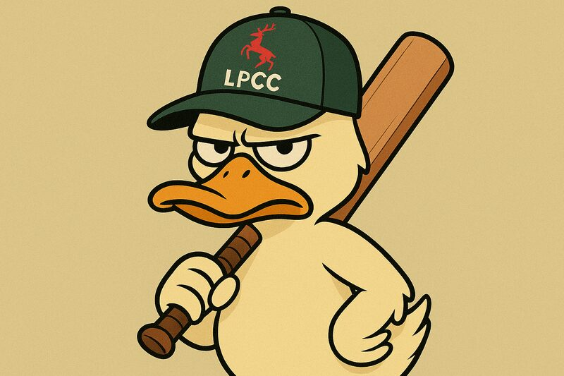
Established in 2025, the LPCC Ducks Club celebrates a uniquely cricketing rite of passage—earning a “duck” on the scorecard. More than just a tongue-in-cheek badge of honor, the Ducks Club brings together players (and their families) who’ve joined that exclusive zero club. From Father-and-Son “Duck and Duckling” pairs to siblings sharing a “Two of a Quack” distinction, we commemorate each outing with good humor and camaraderie. Whether you’re a founding member or a newcomer, the LPCC Ducks Club is where every duck counts—and every story of triumph through adversity is shared with pride.
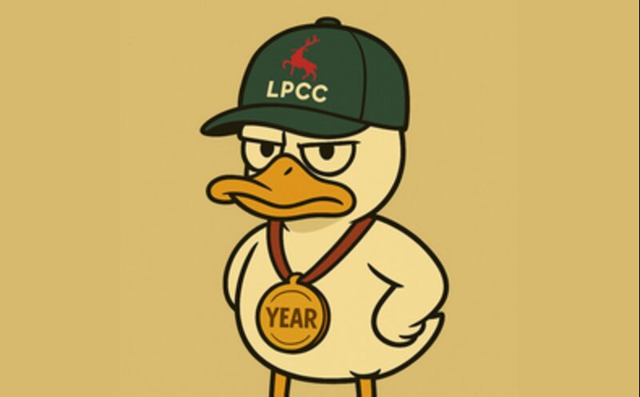
The Duck of the Year honours board salutes the season’s most prolific member of cricket’s exclusive zero club. Each year, the player who accumulates the most ducks earns a place of dubious distinction—reminding us that even the best have off days at the crease. In the event of a tie, the award goes to the batsman with the higher duck percentage, ensuring that every scoreless outing counts toward the crown. Whether you wear this badge proudly or rue it with a wry smile, the Duck of the Year board is where consistency (of a very particular kind) is celebrated.
| Year | Name | Innings | No of Ducks | Percent |
|---|---|---|---|---|
| 2026 | Spencer Gray | 18 | 5 | 27.78% |
| 2025 | John Karassellos | 25 | 7 | 28.0% |
| 2024 | Anthony Karassellos | 31 | 7 | 22.58% |
| 2023 | Nick Tromp | 24 | 7 | 29.17% |
| 2022 | Luke Welsman | 38 | 8 | 21.05% |
| 2021 | Jordan Austin | 22 | 5 | 22.73% |
| 2020 | John Karassellos | 6 | 4 | 66.67% |
| 2019 | John Karassellos | 24 | 11 | 45.83% |
| 2018 | John Karassellos | 17 | 8 | 47.06% |
| 2017 | Luke Welsman | 46 | 7 | 15.22% |
| 2016 | Luke Welsman | 42 | 9 | 21.43% |
| 2015 | Luke Welsman | 24 | 7 | 29.17% |
| 2014 | Thomas Beeney | 21 | 6 | 28.57% |
| 2013 | Nat Presneill | 17 | 7 | 41.18% |
| 2012 | Will Thew | 32 | 6 | 18.75% |
| 2011 | Martin Harris | 15 | 6 | 40.0% |
| 2010 | Joshua Knowler | 23 | 7 | 30.43% |
| 2009 | Jamie Ratcliffe | 15 | 5 | 33.33% |
| 2008 | Mark Christmas | 31 | 7 | 22.58% |
| 2007 | Ray Dixon | 16 | 5 | 31.25% |
| 2006 | Simon Thirkell | 3 | 3 | 100.0% |
| 2005 | Christopher Thirkell | 27 | 9 | 33.33% |
| 2004 | Matthew Carter | 28 | 6 | 21.43% |
| 2003 | Richard Piper | 33 | 5 | 15.15% |
| 2002 | Rob Jackson | 17 | 6 | 35.29% |
| 2001 | Simon Thirkell | 15 | 6 | 40.0% |
| 2000 | Stewart Morrison | 28 | 5 | 17.86% |
| 1999 | Jon Harris | 14 | 4 | 28.57% |
| 1998 | Piers McDonald | 30 | 6 | 20.0% |
| 1997 | Piers McDonald | 42 | 6 | 14.29% |
| 1996 | Stuart Cheesman | 41 | 8 | 19.51% |
| 1995 | Matt Large | 27 | 6 | 22.22% |
| 1994 | Stuart Cheesman | 22 | 7 | 31.82% |
| 1993 | Matt Large | 33 | 6 | 18.18% |
| 1992 | Matt Large | 22 | 5 | 22.73% |
| 1991 | Fred Cheesman | 18 | 6 | 33.33% |
| 1990 | Fred Cheesman | 26 | 7 | 26.92% |
| 1989 | Matt Large | 19 | 4 | 21.05% |
| 1988 | Matt Large | 19 | 5 | 26.32% |
| 1987 | Matt Large | 22 | 6 | 27.27% |
| 1986 | Nigel Thirkell | 40 | 5 | 12.5% |
| 1985 | Jim Hall | 24 | 5 | 20.83% |
| 1984 | Sean Cook | 9 | 5 | 55.56% |
| 1983 | Simon Thirkell | 7 | 5 | 71.43% |
| 1982 | David Iliffe | 36 | 7 | 19.44% |
| 1981 | Jon Harris | 27 | 5 | 18.52% |
| 1980 | Jon Harris | 31 | 7 | 22.58% |
| 1979 | Ross Brice | 15 | 6 | 40.0% |
| 1978 | Keith Miller | 14 | 5 | 35.71% |
| 1977 | Jim Hall | 39 | 11 | 28.21% |
| 1976 | Jon Harris | 26 | 6 | 23.08% |
| 1975 | Colin Dicker | 22 | 7 | 31.82% |
| 1974 | Alan Cradduck | 18 | 7 | 38.89% |
| 1973 | Colin Dicker | 15 | 7 | 46.67% |
| 1972 | Tim Thirkell | 26 | 6 | 23.08% |
| 1971 | John Thirkell | 17 | 6 | 35.29% |
| 1970 | Jim Hall | 14 | 5 | 35.71% |
| 1969 | Percy Brattle | 8 | 5 | 62.5% |
| 1968 | Paul Bowles | 33 | 7 | 21.21% |
| 1967 | John Thirkell | 34 | 4 | 11.76% |
| 1966 | Paul Bowles | 23 | 7 | 30.43% |
| 1965 | Colin Eldred | 40 | 7 | 17.5% |
| 1964 | Terry Donovan | 17 | 6 | 35.29% |
| 1963 | Bob Arnold | 12 | 6 | 50.0% |
| 1962 | R Davison | 8 | 5 | 62.5% |
| 1961 | John Crellin | 21 | 6 | 28.57% |
| 1960 | Pat Hardwick | 37 | 6 | 16.22% |
| 1959 | Roy Clarke | 29 | 9 | 31.03% |
| 1958 | Tony Snell | 8 | 5 | 62.5% |
| 1957 | Cliff Anscombe | 5 | 4 | 80.0% |
| 1956 | Michael Morton | 13 | 4 | 30.77% |
| 1955 | John Thirkell | 33 | 6 | 18.18% |
| 1954 | John Thirkell | 24 | 7 | 29.17% |
| 1953 | J Barclay | 21 | 6 | 28.57% |
| 1952 | John Thirkell | 34 | 8 | 23.53% |
| 1951 | Arthur Cradduck | 19 | 5 | 26.32% |
| 1950 | Bert Buckoke | 4 | 3 | 75.0% |
| 1949 | C Horton | 3 | 2 | 66.67% |
| 1948 | - Sessions | 1 | 1 | 100.0% |
| 1947 | Derek Pantony | 1 | 1 | 100.0% |
| 1946 | Frank Sutton | 3 | 2 | 66.67% |
| 1945 | Jimmy Jameson | 4 | 2 | 50.0% |
| 1944 | a- Gardener | 2 | 2 | 100.0% |
| 1943 | D Sells | 10 | 5 | 50.0% |
| 1941 | B- Vince | 2 | 2 | 100.0% |
| 1940 | Frank Sutton | 10 | 4 | 40.0% |
| 1939 | E Hayes | 1 | 1 | 100.0% |
| 1937 | E Hayes | 1 | 1 | 100.0% |
| 1936 | E Godden | 1 | 1 | 100.0% |
| 1935 | E Cheeseman | 1 | 1 | 100.0% |
| 1934 | A Smith | 1 | 1 | 100.0% |
| 1928 | Bert Buckoke | 1 | 1 | 100.0% |
| 1925 | C Crundwell | 1 | 1 | 100.0% |
| 1910 | Rev J R Leigh | 2 | 2 | 100.0% |
| 1909 | C Stevens | 1 | 1 | 100.0% |
| 1908 | S H Hills | 1 | 1 | 100.0% |
| 1907 | F E Wallis | 1 | 1 | 100.0% |
| 1906 | Charles Wycherley | 4 | 3 | 75.0% |
| 1904 | Arthur Cornwallis | 1 | 1 | 100.0% |
| 1903 | R Smith | 2 | 2 | 100.0% |
| 1902 | Tom Peach Jnr | 3 | 2 | 66.67% |
| 1901 | F Worley | 1 | 1 | 100.0% |
| 1900 | Jack Fryer | 9 | 2 | 22.22% |
| 1899 | A G Oyler | 1 | 1 | 100.0% |
| 1898 | C S Smith | 5 | 2 | 40.0% |
| 1897 | George Champion | 8 | 2 | 25.0% |
| 1896 | D H Kennard | 4 | 3 | 75.0% |
| 1895 | Ernest Cruttenden | 3 | 2 | 66.67% |
| 1893 | A Kent | 5 | 3 | 60.0% |
| 1892 | Captain Bowles | 1 | 1 | 100.0% |
| 1891 | Jack Fryer | 2 | 2 | 100.0% |
| 1888 | Arthur Cornwallis | 2 | 1 | 50.0% |
| 1887 | C Pocock | 1 | 1 | 100.0% |
| 1886 | J F Cornish | 2 | 2 | 100.0% |
| 1885 | A Barker | 1 | 1 | 100.0% |
| 1883 | J Danells | 2 | 2 | 100.0% |
| 1882 | A Startup | 2 | 2 | 100.0% |
| 1881 | J Sedgwick | 4 | 3 | 75.0% |
| 1875 | M A Atkins | 1 | 1 | 100.0% |
| 1873 | F Warde | 2 | 2 | 100.0% |
| 1872 | E Skinner | 2 | 2 | 100.0% |
| 1870 | A Startup | 2 | 1 | 50.0% |
| 1869 | W White | 2 | 2 | 100.0% |
| 1868 | A Startup | 1 | 1 | 100.0% |
| 1867 | J Simpson | 2 | 2 | 100.0% |
| 1865 | J Woollett | 2 | 1 | 50.0% |
| 1864 | C French Snr | 1 | 1 | 100.0% |
| 1860 | F Daniels | 2 | 2 | 100.0% |
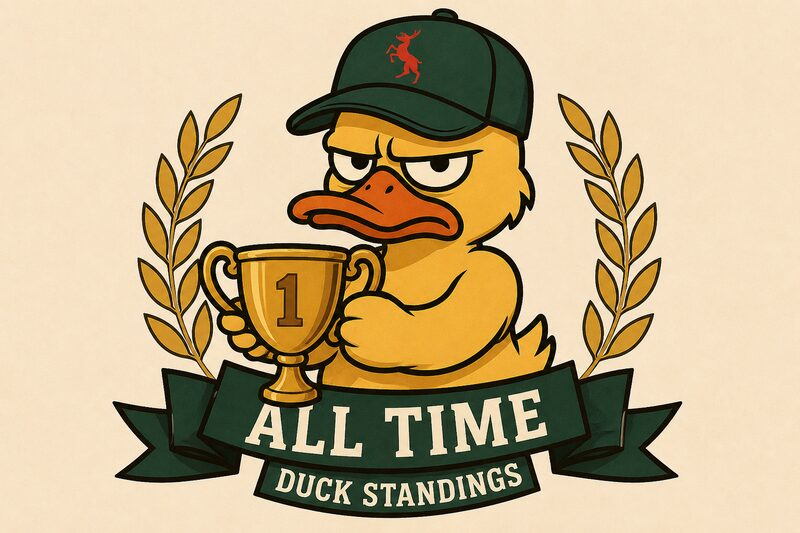
The Team Ducks of the Year honours board celebrates the squad that collectively racks up the most ducks over the course of a season. Each time a team’s batting line-up delivers a goose egg, those zeroless outings add to the tally—and by season’s end, the side with the highest total claims this dubious distinction. Whether it’s the result of a dominant bowling attack or simply a run of misfortune, Team Ducks of the Year reminds us that cricket is a shared endeavour—and sometimes the whole team can unite in the art of not scoring.
| Name | Career | Innings | No of Ducks | Percent |
|---|---|---|---|---|
| Tim Thirkell | 1967–2026 | 1065 | 104 | 9.77% |
| Richard Piper | 1990–2026 | 949 | 96 | 10.12% |
| Jon Harris | 1966–2021 | 708 | 95 | 13.42% |
| Trevor Back | 1973–2026 | 795 | 94 | 11.82% |
| John Thirkell | 1943–1977 | 794 | 90 | 11.34% |
| Jim Hall | 1967–2008 | 505 | 79 | 15.64% |
| Matt Large | 1985–2004 | 350 | 63 | 18.0% |
| Simon Thirkell | 1980–2012 | 258 | 60 | 23.26% |
| Nigel Thirkell | 1969–2019 | 1207 | 60 | 4.97% |
| Luke Welsman | 2012–2026 | 431 | 55 | 12.76% |
| John Karassellos | 2015–2026 | 203 | 54 | 26.6% |
| Thomas Beeney | 2000–2026 | 348 | 54 | 15.52% |
| Paul Bowles | 1965–1997 | 872 | 54 | 6.19% |
| Jordan Austin | 2008–2026 | 417 | 52 | 12.47% |
| Ian Brattle | 1973–2008 | 159 | 51 | 32.08% |
| John Ames | 1952–1978 | 418 | 50 | 11.96% |
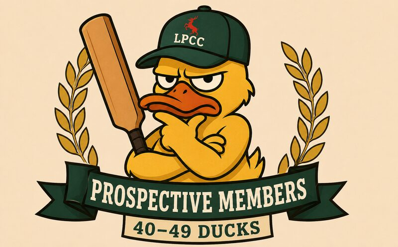
The Prospective Members list honours those closing in on the fabled fifty — batsmen with forty or more career ducks who are still actively adding to the tally in the current or previous season. Their invitation to full membership is being drafted; only the final flourishes (and a few more noughts) remain.
| Name | Career | Innings | No of Ducks | Percent |
|---|---|---|---|---|
| Mark Christmas | 2002–2026 | 508 | 46 | 9.06% |
| Martin Harris | 2009–2026 | 291 | 44 | 15.12% |
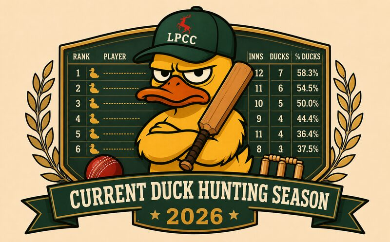
The Current Duck Hunting Season board tracks the race as it happens: every member of this year's zero club, ranked by ducks bagged so far. Innings played and duck percentage are shown alongside, because at the business end of the season the tiebreak matters — the crown goes to volume first, efficiency second. Form is temporary, but a duck is forever; here is where this year's legends are being written, one scoreless stroll back to the pavilion at a time.
| Name | Innings | No of Ducks | Percent |
|---|---|---|---|
| Spencer Gray | 18 | 5 | 27.78% |
| Thomas Beeney | 23 | 5 | 21.74% |
| John Karassellos | 10 | 4 | 40.0% |
| Zach Wilde | 12 | 4 | 33.33% |
| Euan Beardwell | 17 | 4 | 23.53% |
| Anthony Karassellos | 20 | 4 | 20.0% |
| Theo Clements | 20 | 4 | 20.0% |
| Fergus Herron | 6 | 3 | 50.0% |
| Henry Campbell | 6 | 3 | 50.0% |
| Jonathan Sisley | 6 | 3 | 50.0% |
| Ben Wheeler | 9 | 3 | 33.33% |
| Jamie Wheeler | 10 | 3 | 30.0% |
| Mardey Castle | 15 | 3 | 20.0% |
| Nolan Wilde | 18 | 3 | 16.67% |
| Brandon Eloff | 19 | 3 | 15.79% |
| Johan Eloff | 20 | 3 | 15.0% |
| Daniel Baker | 21 | 3 | 14.29% |
| Luke Welsman | 26 | 3 | 11.54% |
| David Holdstock | 2 | 2 | 100.0% |
| Paul Baker | 3 | 2 | 66.67% |
| Finlay Morford | 5 | 2 | 40.0% |
| Ian Hollingworth | 5 | 2 | 40.0% |
| Mohamed Safeer Ibra Lebbe | 5 | 2 | 40.0% |
| Gene Smith | 7 | 2 | 28.57% |
| Alex Wade | 8 | 2 | 25.0% |
| Claire Rootes | 8 | 2 | 25.0% |
| Ian Lowe | 9 | 2 | 22.22% |
| Nick Pennefather | 9 | 2 | 22.22% |
| Mark Christmas | 14 | 2 | 14.29% |
| Praveen Tunga | 16 | 2 | 12.5% |
| William Gray | 17 | 2 | 11.76% |
| Benjamin Austin | 25 | 2 | 8.0% |
| Jordan Austin | 30 | 2 | 6.67% |
| Alex Holt | 1 | 1 | 100.0% |
| Brandon Lindenberg | 1 | 1 | 100.0% |
| David Day | 1 | 1 | 100.0% |
| Russell Wilde | 1 | 1 | 100.0% |
| Alison Brown | 2 | 1 | 50.0% |
| Jude Brooks | 2 | 1 | 50.0% |
| Luke P | 2 | 1 | 50.0% |
| Trevor Back | 2 | 1 | 50.0% |
| Sam Boyns | 3 | 1 | 33.33% |
| Navjot Singh | 4 | 1 | 25.0% |
| Noah Stevens | 4 | 1 | 25.0% |
| Alexander Nunn | 6 | 1 | 16.67% |
| Andrew Joseph | 7 | 1 | 14.29% |
| Will Thew | 9 | 1 | 11.11% |
| Mark Smith | 10 | 1 | 10.0% |
| Laurie Probert | 11 | 1 | 9.09% |
| Ashleigh Bland | 12 | 1 | 8.33% |
| Tim Thirkell | 18 | 1 | 5.56% |
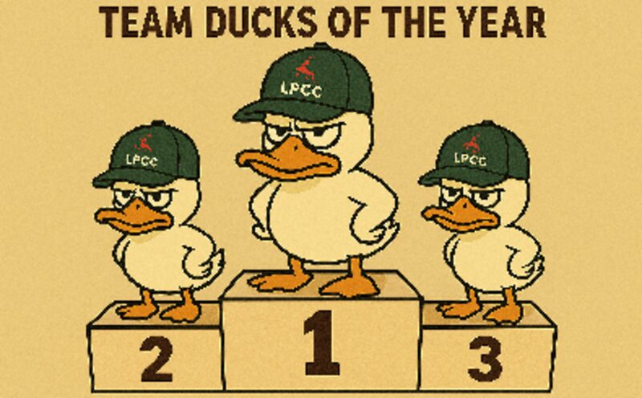
The Team Ducks of the Year honours board celebrates the squad that collectively racks up the most ducks over the course of a season. Each time a team’s batting line-up delivers a goose egg, those zeroless outings add to the tally—and by season’s end, the side with the highest total claims this dubious distinction. Whether it’s the result of a dominant bowling attack or simply a run of misfortune, Team Ducks of the Year reminds us that cricket is a shared endeavour—and sometimes the whole team can unite in the art of not scoring.
| Year | Team | No of Ducks |
|---|---|---|
| 1960 | 1st XI | 71 |
| 1966 | 1st XI | 68 |
| 1959 | 1st XI | 66 |
| 1963 | 1st XI | 66 |
| 1965 | 1st XI | 65 |
| 1973 | 1st XI | 65 |
| 1975 | 1st XI | 65 |
| 1970 | 1st XI | 64 |
| 1956 | 1st XI | 62 |
| 1964 | 1st XI | 62 |
| 1958 | 1st XI | 60 |
| 1961 | 1st XI | 56 |
| 1974 | 1st XI | 56 |
| 1968 | 1st XI | 54 |
| 1969 | 1st XI | 54 |
| 1954 | 1st XI | 53 |
| 1987 | 1st XI | 53 |
| 1953 | 1st XI | 50 |
| 1982 | 1st XI | 50 |
| 1962 | 1st XI | 49 |
| 1984 | 1st XI | 47 |
| 1943 | 1st XI | 46 |
| 1967 | 1st XI | 46 |
| 1955 | 1st XI | 45 |
| 1957 | 1st XI | 43 |
| 1977 | 1st XI | 43 |
| 1980 | 1st XI | 40 |
| 1971 | 1st XI | 39 |
| 1979 | 1st XI | 39 |
| 1976 | 1st XI | 38 |
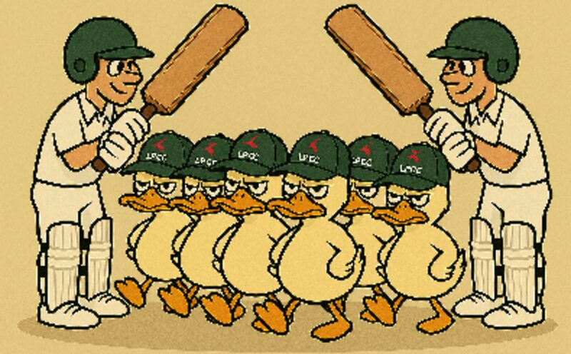
The Most Ducks in an Innings honours board commemorates those matches where a team’s lineup collectively fell silent at the crease. Whenever multiple batsmen return for ducks in a single innings—leaving the scoreboard untouched by their bat—their names are recorded together as a nod to that collective (mis)adventure. Whether it was a bowling masterclass from the opposition or simply one of those days, the “Most Ducks in an Innings” board reminds us that cricket is a team sport, and sometimes even the whole side can share in the comedy of a scoreless spree.
| Year | Opposition | No of Ducks | Contributors | Scorecard |
|---|---|---|---|---|
| 1966 | The Mote CC | 7 | Robert Chance, Don Clayton, Frank Brattle, Eddie Lawrence, Paul Bowles, Gordon Fenner, Alan Tucker | Scorecard |
| 2015 | Stockbury CC | 7 | Jack Gwynn, Christopher Thirkell, Ray Dixon, Luke Welsman, Tobey Castle, Tim Thirkell, Darrell Houghton-Judge | Scorecard |
| 1881 | 1st Innings Collier Street CC | 6 | F Danells, C Fryer, W Wilson, J Mallard, W H Fryer, W White | Scorecard |
| 1881 | 1st Innings Leeds Nil Desperandum | 6 | Jack Fryer, A Startup, W H Fryer, A Tapsfield, W Lamb, W Eggar | Scorecard |
| 1965 | A.Trembeths - 1st XI | 6 | Stan Wratten, John Ames, Colin Eldred, John Abnett, Terry Whittaker, Brian Relf | Scorecard |
| 1975 | West Farleigh CC | 6 | Jim Hall, John Thirkell, Ron Hickman, Tim Thirkell, Colin Dicker, Brian Fuller | Scorecard |
| 1979 | Margate CC | 6 | Ross Brice, Paul Brattle, Graham Cove, Jon Harris, Allan Cooper, D Carr | Scorecard |
| 1981 | Grampound Road CC | 6 | Trevor Back, Richard Ashby, Michael Chambers, Jon Harris, Andy Theobald, Ian Brattle | Scorecard |
| 1992 | Higham & Mockbeggar CC | 6 | Stewart Morrison, Alan Boyns, Richard Piper, Stuart Cheesman, R Batchelor, Ben Harris | Scorecard |
| 2024 | Old Williamsonians CC | 6 | Glen Rawson, Martin Rivers, Toby Joseph, Altus Diener, Nolan Wilde, Henry Campbell | Scorecard |
| 1864 | 1st Innings Collier Street CC | 5 | E Price, W Goad, C French Snr, F May, T M Dann | Scorecard |
| 1867 | 1st Innings Leeds Park CC - 1st XI | 5 | T Gandy, J Amies, T Tomson, J Simpson, T Philpott | Scorecard |
| 1869 | 1st Innings Hayle Place CC - 1st XI | 5 | J Amies, A Startup, H Kemp, W White, X Griffin | Scorecard |
| 1870 | Sissinghurst CC | 5 | J C Crawford, A Startup, C Amies, H Freed, W White | Scorecard |
| 1885 | The Mote CC | 5 | F J Barmby, Tom Peach Snr, N T Nickolls, F J Richardson, O M Leigh | Scorecard |
| 1906 | 1st Innings Leeds Castle CC - 1st XI | 5 | Jack Fryer, Rev J R Leigh, Charles Wycherley, C Kneller, H Wilson | Scorecard |
| 1946 | Gore Court CC | 5 | Bert Pierce, Frank Sutton, Bert Buckoke, N Young, Stuart Thirkell | Scorecard |
| 1953 | Dummy Site | 5 | Basil Sears, D Simmons, P- Tew, Robert Muir, Bert Buckoke | Scorecard |
| 1953 | Hunton Wanderers CC | 5 | John Thirkell, N Simmons, Bob Arnold, G- Tompkinson, Gerald Wright | Scorecard |
| 1954 | Aylesford Paper Mills CC | 5 | William Blight, Monty Deakes, Bob Arnold, Alan Wilkes, Gerald Wright | Scorecard |
| 1954 | Hunton Wanderers CC | 5 | Basil Sears, William Blight, John Thirkell, Richard Harris, Alan Wilkes | Scorecard |
| 1957 | Tilling Steven | 5 | William Buck, C- Haylor, Cliff Anscombe, John Abnett, Alan Wilkes | Scorecard |
| 1958 | Dummy Site | 5 | William Blight, Brian Relf, G Abel, Bob Arnold, Tony Snell | Scorecard |
| 1958 | Tunbridge Wells CC | 5 | Stan Wratten, John Ames, Cliff Anscombe, Roy Clarke, John Lea | Scorecard |
| 1958 | Linton Park CC | 5 | Len Conway, Ray Howard, John Waters, John Abnett, J Lea | Scorecard |
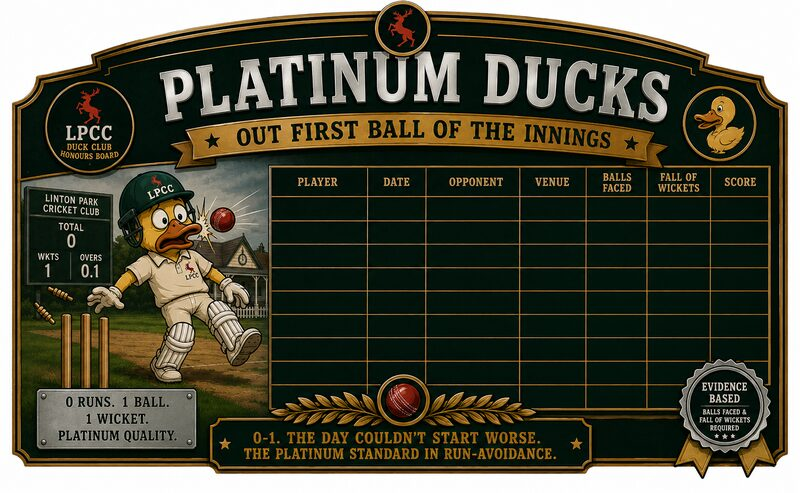
The Platinum Duck is the connoisseur's nought: an opener dismissed by the very first ball of an innings, the scoreboard still showing its zeroes and the fall-of-wicket ledger reading 0-1. There are two grades of misery here — the ★ crowns the purest, struck by the very first ball of the entire match, while the rest were undone by the first ball of the second innings. Entry is strictly evidence-based: only scorecards recording balls faced and the fall of wickets qualify, so every platinum is certified, hallmarked and beyond appeal.
| Year | Name | First Ball Of | Opposition | Dismissal | Scorecard |
|---|---|---|---|---|---|
| 1991 | Paul Gibson | ★ The game | The Mote CC | c D Thomas b Paul Heynes | Scorecard |
| 2011 | -Adam Wright | ★ The game | Stone-in-Oxney CC | b Alex Clarke | Scorecard |
| 2013 | Richard Piper | ★ The game | Boughton & Eastwell CC | c Joe Rogers b Daniel Pritchard | Scorecard |
| 2014 | Jordan Austin | ★ The game | Higham & Mockbeggar CC | b Philip Jack | Scorecard |
| 2018 | Craig Sands | ★ The game | Meopham CC | b Andrew Powney | Scorecard |
| 2018 | Jordan Austin | 2nd innings | Stone-in-Oxney CC | c Nick Maitland b Lee Freeman | Scorecard |
| 2018 | Warren Jackson | 2nd innings | Bidborough CC | lbw b Rob Ackermann | Scorecard |
| 2021 | Jordan Austin | ★ The game | Tunbridge Wells CC | c Hugo Williams b Jamie Dare | Scorecard |
| 2024 | Harrison Fermor | 2nd innings | Upchurch CC | b Kale Irvine | Scorecard |
| 2025 | Mardey Castle | 2nd innings | Leeds & Broomfield CC | c Monte McCague b Harley Haldane | Scorecard |
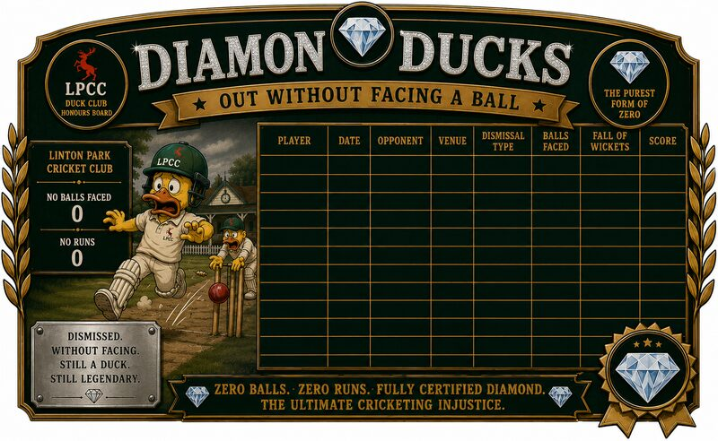
The Diamond Duck honours cricket's most exquisite injustice: dismissed for nought without facing a single ball. Run out at the non-striker's end, stranded by a team-mate's optimism or a bowler's quick hands — a duck earned entirely without the inconvenience of batting. Only scorecards with recorded balls faced qualify, so each diamond below is genuine: zero balls, zero runs, maximum sympathy.
| Year | Name | Opposition | Dismissal | Scorecard |
|---|---|---|---|---|
| 1990 | Alan Boyns | Crockham Hill CC | run out Unsure | Scorecard |
| 1991 | A Stevens | West Farleigh CC | run out Unsure | Scorecard |
| 2002 | Michael Beeney | Bearsted CC | run out Unsure | Scorecard |
| 2010 | Gareth Davies | New Beckenham CC | run out Unsure | Scorecard |
| 2015 | Joshua Knowler | Tyler Hill CC | run out Karl Sutcliffe | Scorecard |
| 2017 | Thomas Beeney | Horndon On The Hill CC | st Jack Walsh b Tom Piggott | Scorecard |
| 2017 | Kevin Presneill | Meopham CC | run out Unsure | Scorecard |
| 2018 | Jordan Austin | Wye CC | run out Joshua White | Scorecard |
| 2023 | Ian Hollingworth | Stowting CC | run out Ryder Wallis | Scorecard |
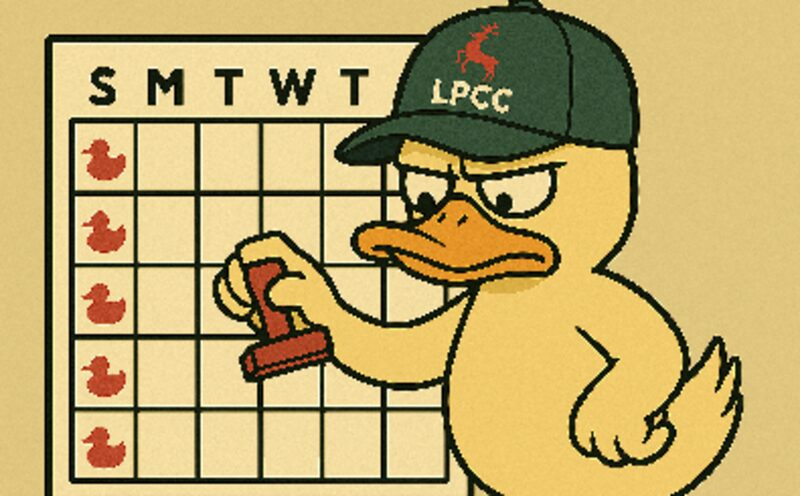
The Ducks in a Row honours board spotlights those batsmen whose season takes an unfortunate turn with successive scoreless innings. Each time a player records ducks in back-to-back (or more) innings within a single campaign, their name is added—a wry celebration of persistence in the face of adversity. Whether it’s a temporary slump or a challenging patch against tough bowling, Ducks in a Row reminds us that every cricketer experiences rough stretches, and sometimes the most memorable feats come from seeing how one bounces back after consecutive zeros.
| Name | Consecutive Ducks | From | To | Scorecard |
|---|---|---|---|---|
| Ian Brattle | 7 | 1974-08-17 | 1975-08-16 | Scorecard |
| A Startup | 5 | 1870-07-06 | 1882-08-02 | Scorecard |
| Alan Wilkes | 5 | 1959-08-22 | 1960-05-21 | Scorecard |
| Richard Ashby | 5 | 1964-05-23 | 1964-06-14 | Scorecard |
| Alan Cradduck | 5 | 1971-05-01 | 1971-06-27 | Scorecard |
| John Karassellos | 5 | 2018-08-18 | 2019-05-11 | Scorecard |
| D Sells | 4 | 1943-07-05 | 1943-08-01 | Scorecard |
| John Ames | 4 | 1955-08-21 | 1955-09-25 | Scorecard |
| Bob Arnold | 4 | 1958-07-26 | 1958-08-16 | Scorecard |
| Tony Snell | 4 | 1958-08-30 | 1959-05-02 | Scorecard |
The Lone Duck honours board spotlights the batsman who most often finds himself as the solitary zero in an otherwise scoring innings. Whenever a player walks back for a duck while every teammate at least adds a run, that rare solo goose egg is noted. The name that appears most frequently here is the one who seems to specialize in being the lone failure at the crease. It’s a wry nod to those individuals whose isolated zeros stand out amid their teammates’ contributions—reminding us that even a single silent dismissal can become a signature quirk.
| Name | No of Ducks |
|---|---|
| Richard Piper | 37 |
| Trevor Back | 29 |
| Tim Thirkell | 27 |
| John Thirkell | 25 |
| Matt Large | 25 |
| Jim Hall | 24 |
| Stewart Morrison | 23 |
| Jordan Austin | 22 |
| Piers McDonald | 22 |
| Jon Harris | 21 |
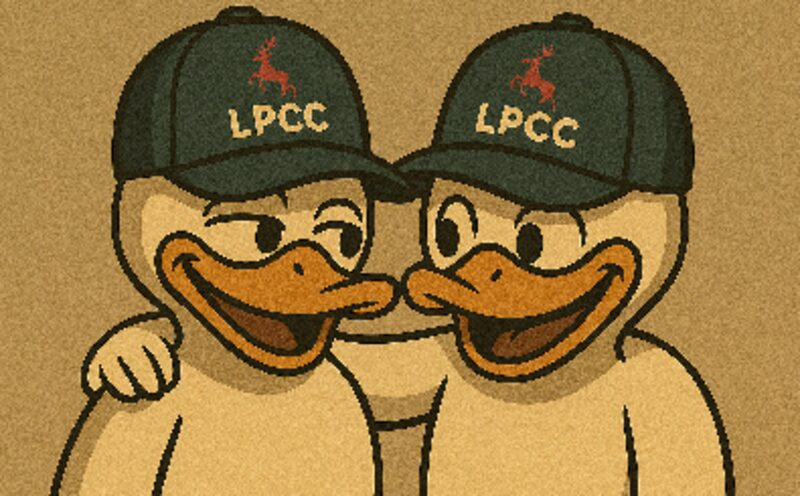
The Only Two Quacks honours board celebrates those pairs of Linton players who most frequently end up as the only two ducks in a single innings. Whenever these teammates walk back to the pavilion scoreless—while every other partner adds at least a run—their names are duly recorded. Over time, the duo who share this solitary quack more often than any other earn a special place here. It’s a tongue-in-cheek nod to that peculiar partnership: the only ducks amid a sea of scorers, united by a rare—and memorable—moment of goose-egg camaraderie.
| Name 1 | Name 2 | No of Ducks |
|---|---|---|
| Ian Brattle | Michael Beeney | 4 |
| Allan Cooper | Jon Harris | 3 |
| Jim Hall | Nigel Thirkell | 3 |
| Adam Pooley | Fred Cheesman | 2 |
| Adam Pooley | Paul Bowles | 2 |
| Alan Wilkes | John Ames | 2 |
| Alan Wilkes | Bob Arnold | 2 |
| Allan Cooper | Trevor Back | 2 |
| Allan Cooper | Jim Hall | 2 |
| Basil Sears | R Davison | 2 |
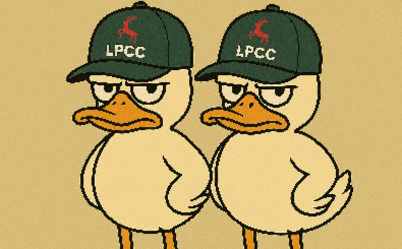
The Quacking Together honours board celebrates those inseparable friends who seem to specialize in noughts. Whenever two (or more) best buds stroll back to the pavilion for ducks in the same match, their names appear side-by-side—a lighthearted tribute to camaraderie forged through shared misfortune. Whether it’s a bowling onslaught or simply cheeky timing, Quacking Together shows that some friendships run so deep, they even find solidarity in a pair of goose eggs.
| Player 1 | Player 2 | No of Games |
|---|---|---|
| Brian Relf | Terry Whittaker | 7 |
| Jim Hall | Tim Thirkell | 7 |
| John Thirkell | William Buck | 7 |
| Jon Harris | Trevor Back | 7 |
| Alan Cradduck | Ron Hickman | 6 |
| Bob Arnold | John Thirkell | 6 |
| Jim Hall | Martin Mears | 6 |
| Jim Hall | Jon Harris | 6 |
| John Ames | Stan Wratten | 6 |
| John Ames | Roy Clarke | 6 |
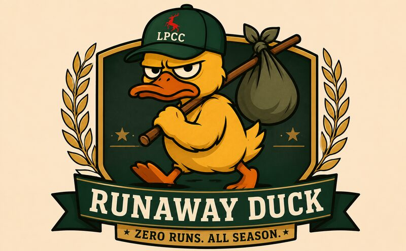
The Runaway Duck honours board salutes those rare batsmen who manage to go an entire season without registering a single run—whether dismissed for a duck or left unbeaten on zero. Whenever a player’s every outing ends in a goose egg (out or not out), their name is immortalized here. It’s a tongue-in-cheek celebration of unbroken consistency in the art of run-avoidance, proving that sometimes the ultimate feat is not scoring at all.
| Year | Name | No of Games | No of Innings | Runs | No of Ducks |
|---|---|---|---|---|---|
| 1958 | Tony Snell | 8 | 8 | 0 | 5 |
| 1964 | Alan Wilkes | 4 | 4 | 0 | 2 |
| 1949 | C Horton | 3 | 3 | 0 | 2 |
| 1963 | C- Haylor | 3 | 3 | 0 | 3 |
| 1965 | Ron Hickman | 3 | 3 | 0 | 3 |
| 1981 | Steve Petty | 3 | 3 | 0 | 2 |
| 2006 | Simon Thirkell | 3 | 3 | 0 | 3 |
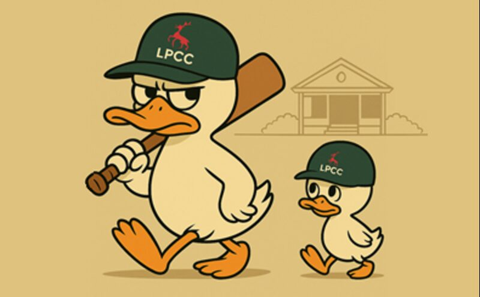
The Duck and Duckling honours board celebrates those special father-and-son pairs who’ve both found themselves in cricket’s exclusive zero club. Each time a dad and his son record ducks in a match, their names are etched side-by-side—honoring the shared (mis)fortune that unites generations at the crease. Whether it’s a rite of passage or a comical quirk of fate, Duck and Duckling reminds us that cricketing legacies come in all forms—sometimes measured not by runs scored, but by stories of solidarity in adversity.
| Year | Opposition | Parent | Duckling | Scorecard |
|---|---|---|---|---|
| 1963 | Tilling Steven | Dick Langridge | Barry Langridge | Scorecard |
| 1963 | Tovil | Dick Langridge | Barry Langridge | Scorecard |
| 1970 | Hythe CC | Frank Brattle | Percy Brattle | Scorecard |
| 1971 | Sibton Park CC | John Thirkell | Tim Thirkell | Scorecard |
| 1973 | Crockham Hill CC | John Thirkell | Nigel Thirkell | Scorecard |
| 1973 | Crockham Hill CC | John Thirkell | Tim Thirkell | Scorecard |
| 1975 | West Farleigh CC | John Thirkell | Tim Thirkell | Scorecard |
| 1975 | Southborough CC | John Thirkell | Tim Thirkell | Scorecard |
| 1978 | Hythe CC | David Buck | William Buck | Scorecard |
| 1982 | Bexhill CC | David Iliffe | Mike Iliffe | Scorecard |
| 1990 | Dummy Site | Steve Cheesman | Fred Cheesman | Scorecard |
| 1991 | Lashings World CC | Fred Cheesman | Steve Cheesman | Scorecard |
| 1992 | Sheldwich CC | Stuart Cheesman | Fred Cheesman | Scorecard |
| 1994 | Horsmonden CC | Fred Cheesman | Stuart Cheesman | Scorecard |
| 1999 | Meopham CC | Simon Thirkell | Christopher Thirkell | Scorecard |
| 2001 | West Farleigh CC | Simon Thirkell | Christopher Thirkell | Scorecard |
| 2005 | Rodmersham CC | Brian Piper | Richard Piper | Scorecard |
| 2005 | Marden CC, Kent | Christopher Thirkell | Simon Thirkell | Scorecard |
| 2006 | Anchorians CC | Michael Beeney | Thomas Beeney | Scorecard |
| 2011 | New Ifield CC | Martin Harris | Jon Harris | Scorecard |
| 2011 | Woolpit CC | Richard Knowler | Joshua Knowler | Scorecard |
| 2012 | Staplehurst CC | Tim Wright | -Adam Wright | Scorecard |
| 2013 | Chestfield CC | Daniel Thirkell | Nigel Thirkell | Scorecard |
| 2013 | Ightham CC | Jordan Austin | Mark Austin | Scorecard |
| 2014 | Bexley CC | Martin Harris | Jon Harris | Scorecard |
| 2015 | Offham CC | Nalaka Perera | Thisal Perera | Scorecard |
| 2017 | Four Elms CC | John Karassellos | Anthony Karassellos | Scorecard |
| 2018 | St Lawrence CC | Thuraiappah Pushpavinothan | Abishek Pushpavinothan | Scorecard |
| 2018 | Cudham Wyse CC | Thuraiappah Pushpavinothan | Abishek Pushpavinothan | Scorecard |
| 2019 | Cudham Wyse CC | Henry Bourdillon | Anton Bourdillon | Scorecard |
| 2020 | Linton Park CC | Anton Bourdillon | Henry Bourdillon | Scorecard |
| 2020 | Loose CC | John Karassellos | Anthony Karassellos | Scorecard |
| 2020 | The Mote CC | Anthony Karassellos | John Karassellos | Scorecard |
| 2022 | Cudham Wyse CC | Toby Hughes | Aaron Hughes | Scorecard |
| 2023 | Stone CC, Kent | Reuben Mundell | Blair Mundell | Scorecard |
| 2023 | Stone CC, Kent | Blair Mundell | Thomas Mundell | Scorecard |
| 2023 | Brasted Chart and Toys Hill CC | Johan Eloff | Brandon Eloff | Scorecard |
| 2025 | Bredgar CC | Brandon Eloff | Johan Eloff | Scorecard |
| 2025 | Cudham Wyse CC | Stuart Beardwell | Euan Beardwell | Scorecard |
| 2026 | Holborough Anchorians CC | Nolan Wilde | Zach Wilde | Scorecard |
| 2026 | Kings Hill CC | Johan Eloff | Brandon Eloff | Scorecard |
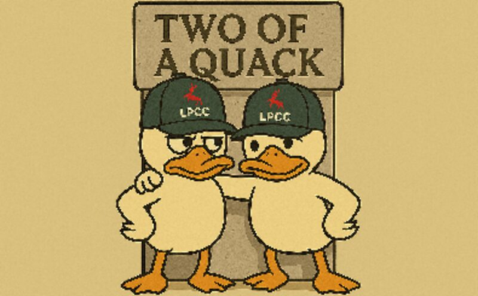
The Two of a Quack honours board celebrates those like-minded brothers who both find themselves dismissed for zero in the same match. When siblings walk back to the pavilion together without scoring, their names are chiseled into the history books —a playful testament to shared misfortune and camaraderie at the crease. Whether by coincidence or wicked timing, Two of a Quack reminds us that cricketing bonds run deep, and sometimes the best stories are written when two brothers face that infamous goose egg in unison.
| Year | Opposition | Sibling 1 | Sibling 2 | Scorecard |
|---|---|---|---|---|
| 1870 | Sissinghurst CC | W Goad | T Goad | Scorecard |
| 1896 | Westborough WMC | D H Kennard | R Kennard | Scorecard |
| 1896 | 1st Innings Maidstone CC - 1st XI | D H Kennard | R Kennard | Scorecard |
| 1902 | Town Malling CC | W Kennard | C W Kennard | Scorecard |
| 1959 | Old Williamsonians CC | H Clarke | Roy Clarke | Scorecard |
| 1959 | Tovil - 1st XI | Roy Clarke | H Clarke | Scorecard |
| 1969 | A.Trembeths - 1st XI | Tim Thirkell | Nigel Thirkell | Scorecard |
| 1973 | Crockham Hill CC | Nigel Thirkell | Tim Thirkell | Scorecard |
| 1978 | Perranarworthal CC | Keith Miller | S Miller | Scorecard |
| 1981 | Cornwall Police CC - Friendly XI | Nigel Thirkell | Tim Thirkell | Scorecard |
| 1982 | Sheldwich CC | Steve Cheale | David Cheale | Scorecard |
| 1982 | Aylesford Paper Mills CC | Steve Cheale | David Cheale | Scorecard |
| 1983 | Ditton CC | Nigel Thirkell | Simon Thirkell | Scorecard |
| 1987 | Anchorians CC | Simon Thirkell | Tim Thirkell | Scorecard |
| 2008 | Hollingbourne CC | Glen Rawson | Iain Rawson | Scorecard |
| 2009 | Yalding CC | Glen Rawson | Iain Rawson | Scorecard |
| 2013 | Borden CC | Matt Bramley-Harker | Will Bramley-Harker | Scorecard |
| 2021 | Bearsted CC | Tobey Castle | Mardey Castle | Scorecard |
| 2023 | Stone CC, Kent | Reuben Mundell | Thomas Mundell | Scorecard |
| 2024 | Leeds & Broomfield CC | Benjamin Austin | Jordan Austin | Scorecard |
| 2024 | Snodland Community CC | James Gray | William Gray | Scorecard |
| 2024 | Bapchild CC | George Taylor | Fred Taylor | Scorecard |
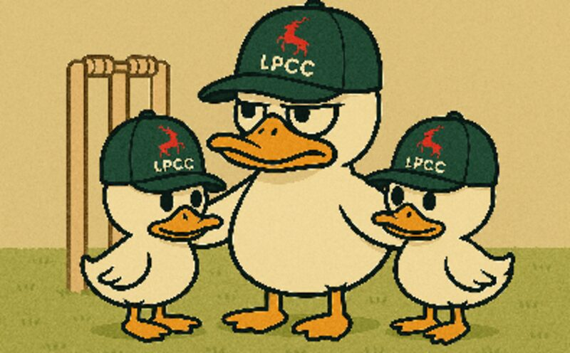
The Family of Ducks honours board celebrates those extraordinary moments when a father and two or more of his sons are dismissed for ducks in the same match. When this multi-generational lineup each walks back to the pavilion scoreless, their names are etched side-by-side—a lighthearted testament to family bonds so strong that even a goose egg can unite the clan at the crease.
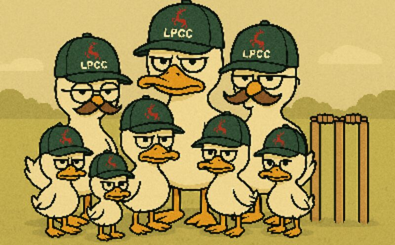
The Extended Family of Ducks honours board commemorates those special occasions when uncles, cousins, and other kin each walk back to the pavilion for a duck in the same match. Whenever this broader network of relatives all register zeroes—be it through a stingy bowling attack or just shared bad luck—their names are inscribed together. It’s a playful nod to the way cricketing misfortune can ripple through an entire clan, uniting even the most far-flung family members in a moment of communal (mis)fortune.
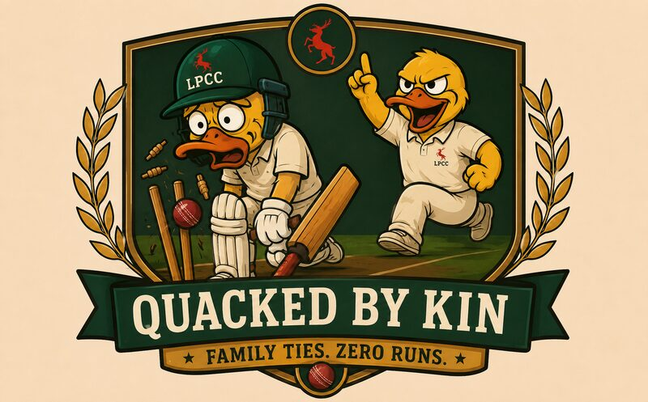
The Quacked by Kin honours board celebrates those rare and poignant moments when a batsman’s demise for a duck is engineered by a close relative bowling at him. Whether it’s a father, brother, cousin or in-law on the attack, whenever that family tie crosses the crease and ends in zero, both names are linked here. It’s a tongue-in-cheek tribute to cricket’s ultimate family feud—proving that sometimes your fiercest rival can come straight from your own household.
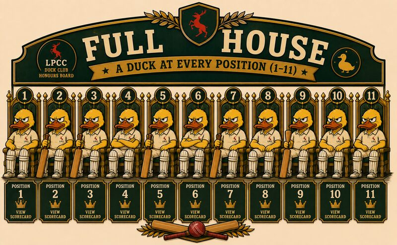
The Full House honours board recognises the completists — batsmen who have been dismissed for a duck at every single position in the order, from opening the innings to propping up the tail at number eleven. Eleven different chairs, the same silent walk back. It is the rarest distinction the Duck Club bestows: proof that no matter where the captain hides you, the nought will find you. Each tick below links to the scorecard where that position fell.
| Name | Career Ducks | No.1 | No.2 | No.3 | No.4 | No.5 | No.6 | No.7 | No.8 | No.9 | No.10 | No.11 |
|---|---|---|---|---|---|---|---|---|---|---|---|---|
| Tim Thirkell | 104 | ✓ | ✓ | ✓ | ✓ | ✓ | ✓ | ✓ | ✓ | ✓ | ✓ | ✓ |
| Richard Piper | 96 | ✓ | ✓ | ✓ | ✓ | ✓ | ✓ | ✓ | ✓ | ✓ | ✓ | ✓ |
| Jon Harris | 95 | ✓ | ✓ | ✓ | ✓ | ✓ | ✓ | ✓ | ✓ | ✓ | ✓ | ✓ |
| Stuart Cheesman | 47 | ✓ | ✓ | ✓ | ✓ | ✓ | ✓ | ✓ | ✓ | ✓ | ✓ | ✓ |
| Fred Cheesman | 42 | ✓ | ✓ | ✓ | ✓ | ✓ | ✓ | ✓ | ✓ | ✓ | ✓ | ✓ |
| Anthony Karassellos | 26 | ✓ | ✓ | ✓ | ✓ | ✓ | ✓ | ✓ | ✓ | ✓ | ✓ | ✓ |
Nearly men: Christopher Thirkell (10/11, missing 11); Darrell Houghton-Judge (10/11, missing 1); Jim Hall (10/11, missing 11); John Ames (10/11, missing 10); John Karassellos (10/11, missing 1); Luke Welsman (10/11, missing 1); Mark Christmas (10/11, missing 11); Matt Large (10/11, missing 1); Stewart Morrison (10/11, missing 11); Terry Donovan (10/11, missing 2); Adam Jackson (9/11, missing 7, 11); Adam Pooley (9/11, missing 1, 11); Allan Cooper (9/11, missing 1, 5); Benny Bell (9/11, missing 10, 11); Bert Buckoke (9/11, missing 1, 3); Bob Arnold (9/11, missing 1, 2); Colin Dicker (9/11, missing 1, 2); Dave Todd (9/11, missing 6, 11); David Iliffe (9/11, missing 1, 10); Dick Langridge (9/11, missing 2, 3); Johan Eloff (9/11, missing 1, 8); John Thirkell (9/11, missing 10, 11); Martin Harris (9/11, missing 1, 4); Matthew Carter (9/11, missing 1, 4); Nigel Thirkell (9/11, missing 1, 11); Piers McDonald (9/11, missing 10, 11); Richard Harris (9/11, missing 2, 3); Robert Wood (9/11, missing 2, 11); Roy Clarke (9/11, missing 1, 11); Thomas Beeney (9/11, missing 1, 3); Tim Wright (9/11, missing 10, 11); Tobey Castle (9/11, missing 10, 11)
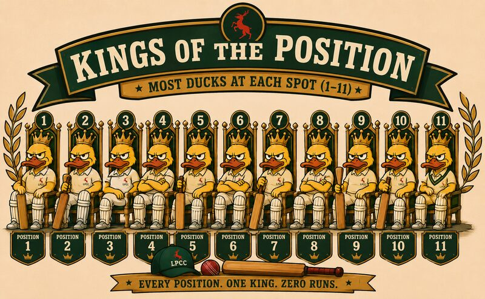
The natural heir to the Full House: Kings of the Position crowns the batsman with the most career ducks at each spot in the order, one throne per position from opener to number eleven. Wherever you bat, someone has already perfected the art of scoring nothing there — these are the reigning specialists, monarchs of the nought at their chosen station.
| Position | Player | No of Ducks |
|---|---|---|
| No.1 | Richard Piper | 31 |
| No.2 | Richard Piper | 21 |
| No.3 | Nigel Thirkell | 25 |
| No.4 | John Thirkell | 33 |
| No.5 | Trevor Back | 25 |
| No.6 | Jim Hall / Trevor Back | 18 |
| No.7 | Jim Hall | 21 |
| No.8 | Jon Harris | 15 |
| No.9 | Thomas Beeney | 18 |
| No.10 | Jon Harris | 21 |
| No.11 | Ian Brattle | 25 |
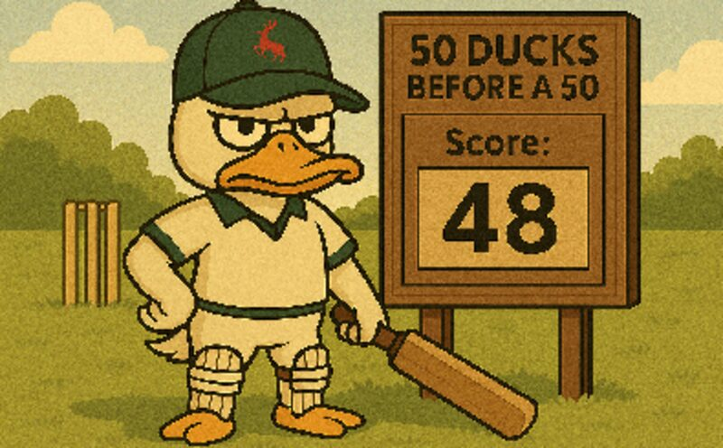
The 50 Ducks Before a 50 honours board salutes the batsman whose quintessential batting milestone remains the dreaded duck. Any player who accumulates fifty scoreless innings before ever reaching a half-century earns their place here—an ironic badge of consistency in delivering zero. It’s a tongue-in-cheek tribute to a feat so singular that it overshadows any run-scoring: fifty times back to the pavilion without troubling the scorer. In celebrating this peculiar landmark, the board reminds us that sometimes a cricketer’s most memorable “achievement” can come not from runs made, but from runs not made.
| Name | No of Ducks | High Score | Innings |
|---|---|---|---|
| Simon Thirkell | 60 | 48 | 258 |
| Ian Brattle | 51 | 33 | 159 |
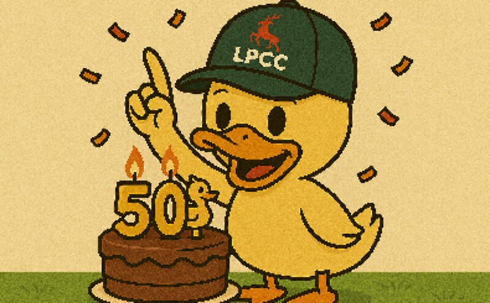
The 50 Ducks Before Age 30 honours board recognizes that rare breed of batsman whose only milestone before turning thirty is a half‐century of ducks. Any player who has recorded fifty scoreless innings prior to celebrating their 30th birthday earns a spot here—a playful testament to youthful consistency in the art of not scoring. Rather than runs amassed, this board commemorates runs avoided, marking fifty trips back to the pavilion without troubling the scorers before hitting thirty. It’s a tongue‐in‐cheek salute to perseverance (or perhaps misadventure) in one’s formative cricketing years.
| Name | Year of Birth | Date of 50th Duck | Scorecard |
|---|---|---|---|
| Luke Welsman | 1998 | 2024-06-22 | Scorecard |
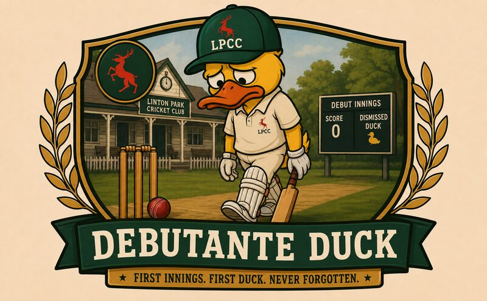
The Debutante Duck honours board celebrates those Linton players whose very first innings sets the tone with a goose egg. Whenever a batsman makes his club debut and walks back to the pavilion for a duck, his name is etched here—a tongue-in-cheek nod to careers that begin with the dreaded zero. It’s a reminder that every great story has a memorable opening, even if yours starts with a quack. A duck in your first-ever innings earns your place; the ★ marks the purists who managed it in their very first match, with no earlier did-not-bat appearances to soften the blow. Entries are drawn from 1950 onwards, when the scorecard archive becomes complete season by season — before then the records, like the batting, have gaps.
| Year | Name | Debut | Opposition | Scorecard |
|---|---|---|---|---|
| 1950 | - Hooper | ★ First game | Hunton Wanderers CC | Scorecard |
| 1950 | B Lloyd | First innings | West Farleigh CC | Scorecard |
| 1950 | Brian Relf | First innings | Bowaters CC | Scorecard |
| 1951 | E Goodall | ★ First game | Dummy Site | Scorecard |
| 1952 | J- Shuttleworth | ★ First game | Dummy Site | Scorecard |
| 1952 | - Dampier | ★ First game | Lenham CC | Scorecard |
| 1953 | R- Fermor | ★ First game | Dummy Site | Scorecard |
| 1953 | Frank Wright | First innings | Dummy Site | Scorecard |
| 1953 | G- Tompkinson | ★ First game | Hunton Wanderers CC | Scorecard |
| 1954 | N- Deal | ★ First game | Dummy Site | Scorecard |
| 1954 | Monty Deakes | ★ First game | Aylesford Paper Mills CC | Scorecard |
| 1954 | Len Conway | ★ First game | Dummy Site | Scorecard |
| 1955 | G Hill | First innings | Charles Arkcoll | Scorecard |
| 1956 | R Vincent | ★ First game | West Farleigh CC | Scorecard |
| 1956 | D- Young | ★ First game | Old Williamsonians CC | Scorecard |
| 1956 | - Spence | ★ First game | Charles Arkcoll | Scorecard |
| 1956 | A Hughes | ★ First game | Dummy Site | Scorecard |
| 1956 | John Francis | ★ First game | Selsted CC | Scorecard |
| 1957 | Cliff Anscombe | First innings | Ron Aiston's XI | Scorecard |
| 1957 | E- Ambros | ★ First game | Dummy Site | Scorecard |
| 1957 | N- Gibson-Watt | ★ First game | Dummy Site | Scorecard |
| 1958 | G Martin | First innings | Gore Court CC | Scorecard |
| 1958 | Robert Wood | ★ First game | Headcorn CC | Scorecard |
| 1958 | E- Childs | ★ First game | Halfway House - Friendly XI | Scorecard |
| 1958 | John Lea | ★ First game | Tunbridge Wells CC | Scorecard |
| 1959 | Brian Mills | ★ First game | Bearsted CC | Scorecard |
| 1959 | R- Spillane | ★ First game | St Lukes Maidstone - 1st XI | Scorecard |
| 1959 | H Clarke | ★ First game | Old Williamsonians CC | Scorecard |
| 1959 | Peter Hughes | ★ First game | Headcorn CC | Scorecard |
| 1960 | R- Jones ---'s- | ★ First game | Charles Arkcoll | Scorecard |
| 1960 | T- May | ★ First game | Rumwood CC | Scorecard |
| 1960 | W- Nash | ★ First game | Charles Arkcoll | Scorecard |
| 1960 | William Agate | ★ First game | Bowaters CC | Scorecard |
| 1961 | Vic Pound | ★ First game | Staplehurst CC | Scorecard |
| 1961 | D- Wright | ★ First game | Staplehurst CC | Scorecard |
| 1961 | - Musgrave | ★ First game | Halfway House - Friendly XI | Scorecard |
| 1963 | B Norman | ★ First game | Maidstone AKCC | Scorecard |
| 1963 | E- Bevan | ★ First game | Charles Arkcoll | Scorecard |
| 1964 | A Mitchell | ★ First game | Maidstone YMCA CC | Scorecard |
| 1965 | H Woodward | ★ First game | The Mote CC | Scorecard |
| 1965 | D- Ibbotson | ★ First game | Bowaters CC | Scorecard |
| 1966 | J Walker | ★ First game | Sevenoaks Vine CC | Scorecard |
| 1966 | Jon Harris | ★ First game | Charles Arkcoll | Scorecard |
| 1967 | Jim Hall | ★ First game | Hartley Country Club CC | Scorecard |
| 1967 | C Brock | ★ First game | Gravesend CC | Scorecard |
| 1967 | K Mills | ★ First game | Birkenhead Grasshoppers CC | Scorecard |
| 1967 | R Venner | ★ First game | Beverley CC, Kent | Scorecard |
| 1967 | P- Williams | ★ First game | Beverley CC, Kent | Scorecard |
| 1968 | Louis Buels | ★ First game | Paddock Wood CC | Scorecard |
| 1969 | Dave Hales | ★ First game | West Farleigh CC | Scorecard |
| 1969 | Ian Cridland | ★ First game | Sibton Park CC | Scorecard |
| 1969 | David Tolhurst | ★ First game | Gravesend CC | Scorecard |
| 1969 | R- Pocock | ★ First game | Bearsted CC | Scorecard |
| 1970 | Alan Cradduck | First innings | Maidstone Police - Midweek XI | Scorecard |
| 1970 | Graham Mountford | ★ First game | Rumwood CC | Scorecard |
| 1970 | Nigel O'Toole | ★ First game | Mote A - Friendly XI | Scorecard |
| 1970 | D- Manktelow | ★ First game | Sibton Park CC | Scorecard |
| 1970 | Steve Gower | ★ First game | Gravesend CC | Scorecard |
| 1971 | Ray Grayland | ★ First game | Northend Sunday | Scorecard |
| 1973 | Ian Brattle | ★ First game | Whitstable CC | Scorecard |
| 1974 | B- Bowers | ★ First game | Westerham CC | Scorecard |
| 1975 | S- Oldfield | ★ First game | Gravesend CC | Scorecard |
| 1976 | G- Kemsley | ★ First game | Bobbing Court CC | Scorecard |
| 1976 | Ian Webb | First innings | Snodland Community CC | Scorecard |
| 1977 | J- McDonald | ★ First game | Barclays Bank Norwich District | Scorecard |
| 1977 | Gary Marshall | ★ First game | Staplehurst CC | Scorecard |
| 1978 | Colin Pay | ★ First game | Bearsted CC | Scorecard |
| 1978 | M Davison | ★ First game | Sibton Park CC | Scorecard |
| 1978 | S Miller | ★ First game | Grampound Road CC | Scorecard |
| 1978 | A Donovan | First innings | West Farleigh CC | Scorecard |
| 1979 | - Copeland | ★ First game | Tonbridge Trade | Scorecard |
| 1979 | J ---- Brooks | ★ First game | Sevenoaks & District Wednesday CC | Scorecard |
| 1979 | Clive Stacey | ★ First game | Sibton Park CC | Scorecard |
| 1979 | D Carr | First innings | Margate CC | Scorecard |
| 1979 | Don Fermor | ★ First game | Lordswood CC | Scorecard |
| 1981 | D- Leppard | ★ First game | Margate CC | Scorecard |
| 1981 | Andy Thresher | First innings | Beacon CC, Cornwall | Scorecard |
| 1981 | Andy Theobald | First innings | Grampound Road CC | Scorecard |
| 1981 | C- Wilkins | ★ First game | Hawkenbury CC - Midweek XI | Scorecard |
| 1982 | J Dunn | ★ First game | Bearsted CC | Scorecard |
| 1982 | J- Dunn | ★ First game | Dummy Site | Scorecard |
| 1982 | Sean Cook | ★ First game | Dummy Site | Scorecard |
| 1982 | R- Dowens | ★ First game | Bobbing Court CC | Scorecard |
| 1982 | Kevin Riley | ★ First game | Dummy Site | Scorecard |
| 1982 | Bob Dyer | ★ First game | The Mote CC | Scorecard |
| 1983 | Tim May | ★ First game | Oxford XIII - Friendly XI | Scorecard |
| 1983 | A Nichols | ★ First game | Gravesend CC | Scorecard |
| 1983 | Robert Moss | ★ First game | Linton Park CC | Scorecard |
| 1984 | J Winnington | ★ First game | Sevenoaks & District Wednesday CC | Scorecard |
| 1985 | Andrew Kember | ★ First game | Penshurst Park CC | Scorecard |
| 1985 | Sean Charlton | ★ First game | Bearsted CC | Scorecard |
| 1985 | Matt Large | First innings | Bearsted CC | Scorecard |
| 1985 | Adrian Simmonds | ★ First game | Sheldwich CC | Scorecard |
| 1987 | Nick Stephens | ★ First game | Penshurst Park CC | Scorecard |
| 1987 | Stewart Morrison | First innings | Dimanchians CC - 1st XI | Scorecard |
| 1987 | Simon Gibson | First innings | Dummy Site | Scorecard |
| 1987 | A Hayward | ★ First game | Dummy Site | Scorecard |
| 1987 | - Huckstep | ★ First game | Brighton & Hove CC | Scorecard |
| 1988 | S Fielder | ★ First game | Bexley CC | Scorecard |
| 1988 | A Pay | ★ First game | Mullion CC | Scorecard |
| 1988 | Paul Sendles | ★ First game | Hastings & St Leonards Priory CC | Scorecard |
| 1989 | Paul Stevens | ★ First game | West Farleigh CC | Scorecard |
| 1989 | D Sharp | ★ First game | Gravesend CC | Scorecard |
| 1989 | Keith Francis | First innings | Mundford CC | Scorecard |
| 1989 | Tim Lush | ★ First game | Falmouth CC | Scorecard |
| 1990 | S Froom | ★ First game | Hollingbourne CC | Scorecard |
| 1990 | G Sutton | ★ First game | Dummy Site | Scorecard |
| 1990 | Tom Whyte | First innings | Dummy Site | Scorecard |
| 1990 | Stuart Cheesman | ★ First game | Dummy Site | Scorecard |
| 1990 | Kevin Mullins | ★ First game | Gravesend CC | Scorecard |
| 1991 | A Stevens | First innings | West Farleigh CC | Scorecard |
| 1991 | A Jesshope | ★ First game | Staplehurst CC | Scorecard |
| 1991 | - Davidson | ★ First game | Bethersden CC | Scorecard |
| 1991 | D Bray | ★ First game | Gravesend CC | Scorecard |
| 1992 | D Cooke | ★ First game | Stockbury CC | Scorecard |
| 1992 | P Tagg | ★ First game | Bexley CC | Scorecard |
| 1992 | R Batchelor | ★ First game | Higham & Mockbeggar CC | Scorecard |
| 1992 | Ben Harris | ★ First game | Higham & Mockbeggar CC | Scorecard |
| 1993 | Ollie Priestly | First innings | Headcorn CC | Scorecard |
| 1994 | Richard Ellis | ★ First game | Horsmonden CC | Scorecard |
| 1994 | C- Pitchers | ★ First game | Dummy Site | Scorecard |
| 1994 | Iain Cardew | ★ First game | Sevenoaks & District Wednesday CC | Scorecard |
| 1994 | R Waite | ★ First game | Rainham (Kent) CC | Scorecard |
| 1995 | D Brown | First innings | West Farleigh CC | Scorecard |
| 1995 | Gavin Saunders | First innings | Harrietsham CC | Scorecard |
| 1995 | B Powell | ★ First game | Borden CC | Scorecard |
| 1996 | S- Hallows | ★ First game | Sevenoaks & District Wednesday CC | Scorecard |
| 1997 | David Hayman | ★ First game | Horton Kirby CC | Scorecard |
| 1997 | John Woodhams | ★ First game | Ingham CC | Scorecard |
| 1998 | Christian Gatehouse | ★ First game | Sevenoaks & District Wednesday CC | Scorecard |
| 1999 | Robert Quirk | ★ First game | Sheldwich CC | Scorecard |
| 2000 | D- Bunch | ★ First game | Bearsted CC | Scorecard |
| 2000 | Thomas Beeney | First innings | Willesborough CC | Scorecard |
| 2001 | Rob Jackson | ★ First game | Blue Star CC | Scorecard |
| 2002 | Matthew Carter | ★ First game | Willesborough CC | Scorecard |
| 2003 | John Haggart | ★ First game | GNG CC GRFC | Scorecard |
| 2003 | Desmond High | ★ First game | Headcorn CC | Scorecard |
| 2003 | Andrew Varker | ★ First game | Falmouth CC | Scorecard |
| 2003 | - Bishop | ★ First game | Mullion CC | Scorecard |
| 2003 | M- Wood | ★ First game | Elliotts CC | Scorecard |
| 2004 | P- Bacon | ★ First game | Stowting CC | Scorecard |
| 2004 | Joe Martin | First innings | Harrietsham CC | Scorecard |
| 2005 | Roger Burgess | ★ First game | Sissinghurst CC | Scorecard |
| 2006 | Paul Webber | ★ First game | Norton Sports CC | Scorecard |
| 2006 | - Howard | ★ First game | Anchorians CC | Scorecard |
| 2008 | Alan Probert | ★ First game | Cobham CC, Kent | Scorecard |
| 2008 | Harry Bee | ★ First game | Cobham CC, Kent | Scorecard |
| 2009 | Dan Barkaway | First innings | Headcorn CC | Scorecard |
| 2009 | Michael Hogg | ★ First game | Dummy Site | Scorecard |
| 2009 | Will Thew | ★ First game | Newington CC | Scorecard |
| 2010 | Andy Bell | First innings | Nuxley CC | Scorecard |
| 2010 | John Williams | ★ First game | Nuxley CC | Scorecard |
| 2010 | Nat Presneill | First innings | Chairman's XI | Scorecard |
| 2011 | Matt Ellesmere | ★ First game | Dartford CC | Scorecard |
| 2011 | Benjamin Austin | ★ First game | Bells Yew Green CC | Scorecard |
| 2012 | Luke Welsman | First innings | Dymchurch CC | Scorecard |
| 2012 | Fraser Ritchie | ★ First game | Faversham CC | Scorecard |
| 2013 | Christopher Bridle | First innings | Stockbury CC | Scorecard |
| 2013 | Gregory Ralph | ★ First game | Detling CC | Scorecard |
| 2014 | Jacob Ryan | ★ First game | Benenden CC | Scorecard |
| 2014 | George Taylor | ★ First game | Benenden CC | Scorecard |
| 2015 | Nalaka Perera | ★ First game | Offham CC | Scorecard |
| 2015 | Thisal Perera | ★ First game | Offham CC | Scorecard |
| 2015 | Russell Dack | ★ First game | Outwood CC | Scorecard |
| 2015 | Lucas Sheppard | ★ First game | Benenden CC | Scorecard |
| 2015 | Bradley Howard | ★ First game | Benenden CC | Scorecard |
| 2015 | Leo Hodges | First innings | High Halstow CC | Scorecard |
| 2016 | Anton Bourdillon | First innings | Eastchurch CC | Scorecard |
| 2016 | Harrison Fermor | ★ First game | Limpsfield Chart CC | Scorecard |
| 2016 | Dan Corpe | ★ First game | Kemsing CC | Scorecard |
| 2017 | Fred Taylor | First innings | Four Elms CC | Scorecard |
| 2017 | Dave Richardson | ★ First game | Sissinghurst CC | Scorecard |
| 2017 | Michael Wilson-Pestell | First innings | Rainham (Kent) CC | Scorecard |
| 2017 | Toby Fermor | ★ First game | Pett CC | Scorecard |
| 2017 | Anthony Karassellos | First innings | Four Elms CC | Scorecard |
| 2018 | Tom Osborne | ★ First game | West Farleigh CC | Scorecard |
| 2018 | Max Butler | First innings | Sissinghurst CC | Scorecard |
| 2018 | James Watkins | ★ First game | Pett CC | Scorecard |
| 2019 | Michaela Karassellos | ★ First game | Ash CC | Scorecard |
| 2019 | Paul McAllister | ★ First game | Penshurst Park CC | Scorecard |
| 2019 | - Saranyan | ★ First game | Linton Park CC | Scorecard |
| 2019 | Will Hughes | ★ First game | Linton Park CC | Scorecard |
| 2020 | George Rogers | ★ First game | Chelsfield Park CC | Scorecard |
| 2021 | Harvey Lowe | First innings | The Mote CC | Scorecard |
| 2021 | Alistair Mills | ★ First game | The Mote CC | Scorecard |
| 2021 | Blair Mundell | First innings | Eynsford CC | Scorecard |
| 2021 | Louis Turney | ★ First game | The Mote CC | Scorecard |
| 2022 | Nick Pennefather | First innings | Tunbridge Wells CC | Scorecard |
| 2022 | Zach Wilde | ★ First game | Norton Sports CC | Scorecard |
| 2022 | Russell Wilde | ★ First game | Town Malling CC | Scorecard |
| 2023 | Reuben Mundell | ★ First game | Stone CC, Kent | Scorecard |
| 2023 | Thomas Mundell | ★ First game | Stone CC, Kent | Scorecard |
| 2023 | Altus Diener | ★ First game | Linton Park CC | Scorecard |
| 2023 | Magnus Boxer | ★ First game | Bearsted CC | Scorecard |
| 2024 | David Day | ★ First game | Yalding CC | Scorecard |
| 2024 | Daniel Baker | ★ First game | Norton Sports CC | Scorecard |
| 2024 | Alfie Marples | ★ First game | Norton Sports CC | Scorecard |
| 2024 | Richard Odling | ★ First game | Detling CC | Scorecard |
| 2024 | Callum Gannon | ★ First game | Penshurst Park CC | Scorecard |
| 2025 | Rachel Rawson | ★ First game | Penshurst Park CC | Scorecard |
| 2025 | Alexander Daniels | First innings | Rolvenden CC | Scorecard |
| 2025 | Christian Eloff | ★ First game | Rolvenden CC | Scorecard |
| 2025 | Jacob Landman | ★ First game | New Ash Green CC | Scorecard |
| 2025 | Stuart Beardwell | First innings | Cudham Wyse CC | Scorecard |
| 2026 | Brandon Lindenberg | First innings | New Ash Green CC | Scorecard |
| 2026 | David Holdstock | ★ First game | Harvel CC | Scorecard |
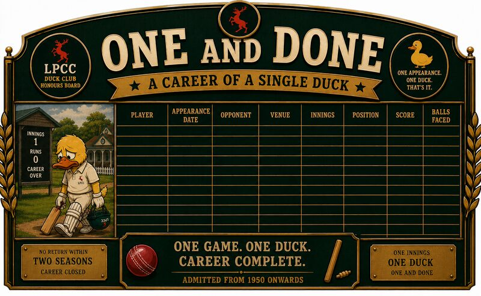
The One and Done board immortalises the club's briefest careers: one appearance in Linton colours, one walk to the middle, one duck, and then — nothing. No second chance, no redemption arc, just a single perfect nought hanging in the record like a full stop. Whether emergency fill-ins, visiting friends or men who simply took the hint, each gave the club everything they had, and it added up to zero. Entries are drawn from 1950 onwards, when the scorecard archive becomes complete, and a career only counts as closed after two full seasons without a return.
| Year | Name | Dismissal | Opposition | Scorecard |
|---|---|---|---|---|
| 1950 | - Hooper | b R Venner | Hunton Wanderers CC | Scorecard |
| 1951 | E Goodall | b D- Heasman | Dummy Site | Scorecard |
| 1952 | J- Shuttleworth | c H Hawkins b Alan Milstead | Dummy Site | Scorecard |
| 1952 | - Dampier | b F- Brooks | Lenham CC | Scorecard |
| 1953 | R- Fermor | b v- Pound | Dummy Site | Scorecard |
| 1953 | G- Tompkinson | c J Foley b J Ludden | Hunton Wanderers CC | Scorecard |
| 1956 | D- Young | c & b J- Ellis | Old Williamsonians CC | Scorecard |
| 1956 | - Spence | b Stan Wratten | Charles Arkcoll | Scorecard |
| 1957 | E- Ambros | c W- Hunt b E- Hollands | Dummy Site | Scorecard |
| 1957 | N- Gibson-Watt | c M- Beacon b a- Trembeth | Dummy Site | Scorecard |
| 1958 | E- Childs | b Brian Allsworth | Halfway House - Friendly XI | Scorecard |
| 1958 | John Lea | b Charles Wicker | Tunbridge Wells CC | Scorecard |
| 1960 | T- May | b J- Carter | Rumwood CC | Scorecard |
| 1960 | W- Nash | c Sean Carter b Reg Waters | Charles Arkcoll | Scorecard |
| 1961 | D- Wright | c W- Paine b J- Sutton | Staplehurst CC | Scorecard |
| 1961 | - Musgrave | b Roger Mills | Halfway House - Friendly XI | Scorecard |
| 1963 | B Norman | b William Dover | Maidstone AKCC | Scorecard |
| 1965 | D- Ibbotson | c John Evans b Alf Jewiss | Bowaters CC | Scorecard |
| 1966 | J Walker | c a- Greenwood b R- Pyle | Sevenoaks Vine CC | Scorecard |
| 1967 | C Brock | b H Eve | Gravesend CC | Scorecard |
| 1967 | K Mills | c R Stears b N Dickinson | Birkenhead Grasshoppers CC | Scorecard |
| 1967 | R Venner | c B Short b M Bryant | Beverley CC, Kent | Scorecard |
| 1967 | P- Williams | c B Short b K Collard | Beverley CC, Kent | Scorecard |
| 1969 | Ian Cridland | b G Keutenius | Sibton Park CC | Scorecard |
| 1969 | R- Pocock | c P- Johnson b Ian Lambert | Bearsted CC | Scorecard |
| 1970 | D- Manktelow | b David Rawlings | Sibton Park CC | Scorecard |
| 1976 | G- Kemsley | b Paul Aylward | Bobbing Court CC | Scorecard |
| 1977 | J- McDonald | b D Bowker | Barclays Bank Norwich District | Scorecard |
| 1978 | M Davison | b - Keeler | Sibton Park CC | Scorecard |
| 1979 | - Copeland | b - Wright | Tonbridge Trade | Scorecard |
| 1979 | J ---- Brooks | b P- Hollamby | Sevenoaks & District Wednesday CC | Scorecard |
| 1979 | D Carr | b S Kelly | Margate CC | Scorecard |
| 1981 | D- Leppard | b Desmond Gregory | Margate CC | Scorecard |
| 1981 | Andy Theobald | b T Maddern | Grampound Road CC | Scorecard |
| 1981 | C- Wilkins | c & b S Gower | Hawkenbury CC - Midweek XI | Scorecard |
| 1982 | J Dunn | b B Lewis | Bearsted CC | Scorecard |
| 1982 | R- Dowens | b D Sloan | Bobbing Court CC | Scorecard |
| 1982 | Kevin Riley | b - James | Dummy Site | Scorecard |
| 1983 | Tim May | b T- Brennan | Oxford XIII - Friendly XI | Scorecard |
| 1983 | Robert Moss | b Malcolm Pay | Linton Park CC | Scorecard |
| 1984 | J Winnington | b S Hallbrook | Sevenoaks & District Wednesday CC | Scorecard |
| 1987 | Simon Gibson | b I Russell | Dummy Site | Scorecard |
| 1987 | - Huckstep | b A Hansford | Brighton & Hove CC | Scorecard |
| 1988 | A Pay | b Stephen Green | Mullion CC | Scorecard |
| 1988 | Paul Sendles | lbw b Unsure | Hastings & St Leonards Priory CC | Scorecard |
| 1989 | Paul Stevens | b Tim Baker | West Farleigh CC | Scorecard |
| 1989 | D Sharp | lbw b David Lackford | Gravesend CC | Scorecard |
| 1990 | G Sutton | lbw b Eddie Oyderian | Dummy Site | Scorecard |
| 1991 | A Jesshope | b B Linford | Staplehurst CC | Scorecard |
| 1991 | - Davidson | b N Ward | Bethersden CC | Scorecard |
| 1991 | D Bray | c Glen Giddings b Paul Putland | Gravesend CC | Scorecard |
| 1992 | P Tagg | lbw b Richard Melbourne | Bexley CC | Scorecard |
| 1992 | R Batchelor | b Richard Hawkins | Higham & Mockbeggar CC | Scorecard |
| 1992 | Ben Harris | b Richard Hawkins | Higham & Mockbeggar CC | Scorecard |
| 1994 | C- Pitchers | run out Unsure | Dummy Site | Scorecard |
| 1994 | R Waite | c Stewart Macfarlane b Mick Pay | Rainham (Kent) CC | Scorecard |
| 1995 | D Brown | b Julian Nutley | West Farleigh CC | Scorecard |
| 1995 | B Powell | run out Unsure | Borden CC | Scorecard |
| 1996 | S- Hallows | c R- Alexander b Pat Reynolds | Sevenoaks & District Wednesday CC | Scorecard |
| 1997 | David Hayman | b K Tidmus | Horton Kirby CC | Scorecard |
| 1999 | Robert Quirk | c & b David Knight | Sheldwich CC | Scorecard |
| 2003 | Andrew Varker | c David Angove b James Toseland | Falmouth CC | Scorecard |
| 2003 | - Bishop | b Barry Partridge | Mullion CC | Scorecard |
| 2003 | M- Wood | c & b Alan Ricketts | Elliotts CC | Scorecard |
| 2005 | Roger Burgess | c Stephen Brown b Ian Wicks | Sissinghurst CC | Scorecard |
| 2006 | - Howard | b - Dandridge | Anchorians CC | Scorecard |
| 2009 | Michael Hogg | c D Curtis b - Smith | Dummy Site | Scorecard |
| 2010 | John Williams | c John Andrews b Naveed Kimani | Nuxley CC | Scorecard |
| 2011 | Matt Ellesmere | c Randy Rampersad b Ryan Carter | Dartford CC | Scorecard |
| 2015 | Lucas Sheppard | b Rob Ward | Benenden CC | Scorecard |
| 2015 | Bradley Howard | b Neal Metcalf | Benenden CC | Scorecard |
| 2015 | Leo Hodges | b Ben Gordon | High Halstow CC | Scorecard |
| 2017 | Dave Richardson | b Angus Knowler | Sissinghurst CC | Scorecard |
| 2017 | Michael Wilson-Pestell | b Luke Fewsdale | Rainham (Kent) CC | Scorecard |
| 2018 | Tom Osborne | b Tom Osborne | West Farleigh CC | Scorecard |
| 2019 | - Saranyan | lbw b Henry Bourdillon | Linton Park CC | Scorecard |
| 2024 | Alfie Marples | b Sam Sketchley | Norton Sports CC | Scorecard |
| 2024 | Callum Gannon | b Theo Rimmer | Penshurst Park CC | Scorecard |
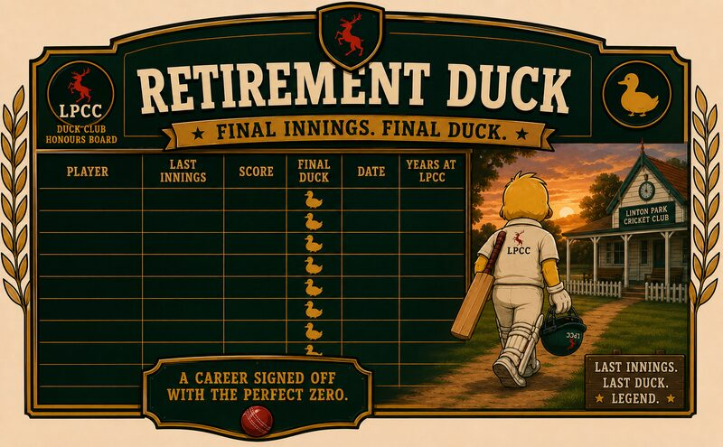
The Retirement Duck honours board salutes those whose final act at the crease was the noblest of all: a duck. Whatever glories came before, their last walk back to the Linton pavilion was a scoreless one — the mic-drop of the zero club, a career signed off with a perfectly round number. Some plan a farewell fifty; these members delivered a farewell nought, and the honours board loves them all the more for it. Entries are drawn from 1950 onwards, when the scorecard archive becomes complete season by season — before then the records, like the batting, have gaps.
| Year | Name | Opposition | Scorecard |
|---|---|---|---|
| 1950 | - Hooper | Hunton Wanderers CC | Scorecard |
| 1951 | Dennis Smith | Linton Park CC | Scorecard |
| 1951 | E Goodall | Dummy Site | Scorecard |
| 1952 | H Newport | Hunton Wanderers CC | Scorecard |
| 1952 | J- Shuttleworth | Dummy Site | Scorecard |
| 1952 | - Maynard | Lenham CC | Scorecard |
| 1952 | - Dampier | Lenham CC | Scorecard |
| 1953 | N Simmons | Hunton Wanderers CC | Scorecard |
| 1953 | Bill Hall | Folkestone CC | Scorecard |
| 1953 | G- Neighbour | Charles Arkcoll | Scorecard |
| 1953 | R- Fermor | Dummy Site | Scorecard |
| 1953 | G- Tompkinson | Hunton Wanderers CC | Scorecard |
| 1954 | Robert Muir | Dummy Site | Scorecard |
| 1954 | J Barclay | Bearsted CC | Scorecard |
| 1955 | Bert Pierce | West Farleigh CC | Scorecard |
| 1955 | Ray Tippen | Linton Park CC | Scorecard |
| 1955 | L Skinner | Marden CC, Kent | Scorecard |
| 1956 | Ernie Chiesman | Charles Arkcoll | Scorecard |
| 1956 | Peter Weedon | Linton Park CC | Scorecard |
| 1956 | Monty Deakes | Linton Park CC | Scorecard |
| 1956 | R- Waters | Shipbourne CC | Scorecard |
| 1956 | D- Young | Old Williamsonians CC | Scorecard |
| 1956 | - Spence | Charles Arkcoll | Scorecard |
| 1957 | E- Ambros | Dummy Site | Scorecard |
| 1957 | N- Gibson-Watt | Dummy Site | Scorecard |
| 1958 | J- Carman | Hambros Bank | Scorecard |
| 1958 | E- Childs | Halfway House - Friendly XI | Scorecard |
| 1958 | John Lea | Tunbridge Wells CC | Scorecard |
| 1959 | Michael Fagg | Hambros Bank | Scorecard |
| 1959 | R- Spillane | Gore Court CC | Scorecard |
| 1960 | T- May | Rumwood CC | Scorecard |
| 1960 | W- Nash | Charles Arkcoll | Scorecard |
| 1961 | D- Wright | Staplehurst CC | Scorecard |
| 1961 | - Musgrave | Halfway House - Friendly XI | Scorecard |
| 1962 | Frank Wright | Charles Arkcoll | Scorecard |
| 1963 | X Rayner | Tilling Steven | Scorecard |
| 1963 | C- Haylor | Linton Park CC | Scorecard |
| 1963 | B Norman | Maidstone AKCC | Scorecard |
| 1963 | E- Bevan | Tovil | Scorecard |
| 1965 | H Woodward | Headcorn CC | Scorecard |
| 1965 | D- Ibbotson | Bowaters CC | Scorecard |
| 1966 | Colin Eldred | Bobbing Court CC | Scorecard |
| 1966 | J Walker | Sevenoaks Vine CC | Scorecard |
| 1967 | R Dudney | Loughton CC | Scorecard |
| 1967 | Keith Pride | A.Trembeths - 1st XI | Scorecard |
| 1967 | C Brock | Gravesend CC | Scorecard |
| 1967 | K Mills | Birkenhead Grasshoppers CC | Scorecard |
| 1967 | R Venner | Beverley CC, Kent | Scorecard |
| 1967 | P- Williams | Beverley CC, Kent | Scorecard |
| 1969 | Ian Cridland | Sibton Park CC | Scorecard |
| 1969 | R- Pocock | Bearsted CC | Scorecard |
| 1970 | D- Whyman | Sibton Park CC | Scorecard |
| 1970 | D- Manktelow | Sibton Park CC | Scorecard |
| 1971 | Brian Relf | Northend Sunday | Scorecard |
| 1972 | Terry Whittaker | West Farleigh CC | Scorecard |
| 1973 | David Stevens | West Farleigh CC | Scorecard |
| 1975 | John Inkpen | Dummy Site | Scorecard |
| 1975 | Peter Elms | Margate CC | Scorecard |
| 1976 | G- Kemsley | Bobbing Court CC | Scorecard |
| 1977 | J- McDonald | Barclays Bank Norwich District | Scorecard |
| 1978 | Robert Chance | Sibton Park CC | Scorecard |
| 1978 | M Davison | Sibton Park CC | Scorecard |
| 1978 | S Miller | Perranarworthal CC | Scorecard |
| 1979 | A Donovan | Rumwood CC | Scorecard |
| 1979 | G- Husband | St Lawrence & Highland Court CC (inactive) | Scorecard |
| 1979 | - Copeland | Tonbridge Trade | Scorecard |
| 1979 | J ---- Brooks | Sevenoaks & District Wednesday CC | Scorecard |
| 1979 | D Carr | Margate CC | Scorecard |
| 1980 | Alan Randall | Police 'A' | Scorecard |
| 1981 | Fred Greenfield | Bidborough CC | Scorecard |
| 1981 | Graham Cove | YMCA Maidstone - 1st XI | Scorecard |
| 1981 | Roger Craske | Kennington CC, Kent | Scorecard |
| 1981 | D- Leppard | Margate CC | Scorecard |
| 1981 | Andy Theobald | Grampound Road CC | Scorecard |
| 1981 | C- Wilkins | Hawkenbury CC - Midweek XI | Scorecard |
| 1982 | David Cheale | Linton Park CC | Scorecard |
| 1982 | J Dunn | Bearsted CC | Scorecard |
| 1982 | R- Dowens | Bobbing Court CC | Scorecard |
| 1982 | Kevin Riley | Dummy Site | Scorecard |
| 1983 | Tim May | Oxford XIII - Friendly XI | Scorecard |
| 1983 | Robert Moss | Linton Park CC | Scorecard |
| 1984 | John Hansford | Rumwood CC | Scorecard |
| 1984 | Tim Theobald | Penshurst Park CC | Scorecard |
| 1984 | Nick Dunham | Chatham Nomads CC | Scorecard |
| 1984 | Ivan Diprose | Old Anchorians CC - Friendly XI | Scorecard |
| 1984 | J Winnington | Sevenoaks & District Wednesday CC | Scorecard |
| 1985 | Sean Riley | Dummy Site | Scorecard |
| 1985 | Andrew Kember | Gravesend CC | Scorecard |
| 1987 | Martin Thompson | Dummy Site | Scorecard |
| 1987 | Ian McKechnie | Anchorians CC | Scorecard |
| 1987 | M Clarke | Hollingbourne CC | Scorecard |
| 1987 | Simon Gibson | Dummy Site | Scorecard |
| 1987 | - Huckstep | Brighton & Hove CC | Scorecard |
| 1988 | Steve Cheale | Morden Village CC - 1st XI | Scorecard |
| 1988 | A Pay | Mullion CC | Scorecard |
| 1988 | Paul Sendles | Hastings & St Leonards Priory CC | Scorecard |
| 1989 | Trevor Hales | Meopham CC | Scorecard |
| 1989 | Simon Hammond | Gravesend CC | Scorecard |
| 1989 | Paul Stevens | West Farleigh CC | Scorecard |
| 1989 | D Sharp | Gravesend CC | Scorecard |
| 1990 | Adrian Simmonds | Coleshill CC, Warks | Scorecard |
| 1990 | Ron Kemp | Kent Invicta CC | Scorecard |
| 1990 | G Sutton | Dummy Site | Scorecard |
| 1991 | Martin Larkin | Leybourne CC | Scorecard |
| 1991 | Nick Stephens | Bearsted CC | Scorecard |
| 1991 | A Jesshope | Staplehurst CC | Scorecard |
| 1991 | - Davidson | Bethersden CC | Scorecard |
| 1991 | D Bray | Gravesend CC | Scorecard |
| 1992 | Jeremy Thorpe | West Farleigh CC | Scorecard |
| 1992 | D Cooke | Kennington CC, Kent | Scorecard |
| 1992 | P Tagg | Bexley CC | Scorecard |
| 1992 | R Batchelor | Higham & Mockbeggar CC | Scorecard |
| 1992 | Ben Harris | Higham & Mockbeggar CC | Scorecard |
| 1993 | Dave Hales | Ashford CC, Kent | Scorecard |
| 1993 | Paul Bishop | Dummy Site | Scorecard |
| 1993 | J Hanbury | Rumwood CC | Scorecard |
| 1994 | C- Pitchers | Dummy Site | Scorecard |
| 1994 | R Waite | Rainham (Kent) CC | Scorecard |
| 1995 | Don Dansie | Yalding CC | Scorecard |
| 1995 | Steve Masters | Headcorn CC | Scorecard |
| 1995 | D Brown | West Farleigh CC | Scorecard |
| 1995 | B Powell | Borden CC | Scorecard |
| 1996 | Gareth Thomas | Ipswich Greyhounds CC - Kent Tour XI | Scorecard |
| 1996 | S- Hallows | Sevenoaks & District Wednesday CC | Scorecard |
| 1997 | David Hayman | Horton Kirby CC | Scorecard |
| 1998 | Peter Dean | Horsmonden CC | Scorecard |
| 1999 | P- Martin | Dummy Site | Scorecard |
| 1999 | David Lines | Leeds & Broomfield CC | Scorecard |
| 1999 | Christian Gatehouse | The Mote CC | Scorecard |
| 1999 | Robert Quirk | Sheldwich CC | Scorecard |
| 2000 | Duncan Keene | Downham & Bellingham CC | Scorecard |
| 2000 | S- Brennan | Ipswich Greyhounds CC - Kent Tour XI | Scorecard |
| 2001 | Paul Croucher | Horsmonden CC | Scorecard |
| 2001 | Richard Ellis | Elliotts CC | Scorecard |
| 2002 | J- Ferguson | Clarion CC | Scorecard |
| 2003 | Adam Pooley | Chestfield CC | Scorecard |
| 2003 | Tom Thirkell | Mullion CC | Scorecard |
| 2003 | Andrew Varker | Falmouth CC | Scorecard |
| 2003 | - Bishop | Mullion CC | Scorecard |
| 2003 | M- Wood | Elliotts CC | Scorecard |
| 2005 | Chris Quirk | Dummy Site | Scorecard |
| 2005 | Roger Burgess | Sissinghurst CC | Scorecard |
| 2006 | Samuel Harris | Norton Sports CC | Scorecard |
| 2006 | - Howard | Anchorians CC | Scorecard |
| 2008 | Andrew Moss | Dummy Site | Scorecard |
| 2008 | Jack Jenner | Hollingbourne CC | Scorecard |
| 2009 | Carl Davis | Chelsfield Exiles CC | Scorecard |
| 2009 | Jason White | Headcorn CC | Scorecard |
| 2009 | William Dolton | Leeds & Broomfield CC | Scorecard |
| 2009 | Alan Probert | Newington CC | Scorecard |
| 2009 | Michael Hogg | Dummy Site | Scorecard |
| 2010 | John Williams | Nuxley CC | Scorecard |
| 2011 | Ron McCormick | Sissinghurst CC | Scorecard |
| 2011 | Desmond High | Shipbourne CC | Scorecard |
| 2011 | Paul Ratcliffe | New Ifield CC | Scorecard |
| 2011 | Matt Ellesmere | Dartford CC | Scorecard |
| 2012 | Harry Bee | Sidcup CC | Scorecard |
| 2012 | -Adam Wright | Farningham CC | Scorecard |
| 2012 | Nick Ward | Great Chart CC | Scorecard |
| 2013 | Will Bramley-Harker | Mersham Sports CC | Scorecard |
| 2013 | Mark Austin | Ightham CC | Scorecard |
| 2015 | Michael Beeney | High Halstow CC | Scorecard |
| 2015 | Edward Bridle | New Ifield CC | Scorecard |
| 2015 | Gregory Ralph | New Ifield CC | Scorecard |
| 2015 | Lucas Sheppard | Benenden CC | Scorecard |
| 2015 | Bradley Howard | Benenden CC | Scorecard |
| 2015 | Leo Hodges | High Halstow CC | Scorecard |
| 2016 | Lee Bennett | Holcombe & Blue Bell Hill CC | Scorecard |
| 2017 | Dave Richardson | Sissinghurst CC | Scorecard |
| 2017 | Michael Wilson-Pestell | Rainham (Kent) CC | Scorecard |
| 2017 | Toby Fermor | Betsham CC | Scorecard |
| 2018 | Nat Presneill | Leeds & Broomfield CC | Scorecard |
| 2018 | Tom Osborne | West Farleigh CC | Scorecard |
| 2019 | Lewis Burnham | Borstal CC | Scorecard |
| 2019 | - Saranyan | Linton Park CC | Scorecard |
| 2020 | Reece Merenda | Sissinghurst CC | Scorecard |
| 2021 | Ryan Silk | Chelsfield Park CC | Scorecard |
| 2021 | Karthik Damodaran | Eynsford CC | Scorecard |
| 2022 | Steve Puxty | Pembury CC | Scorecard |
| 2022 | Davy Matthews | Marden CC, Kent | Scorecard |
| 2022 | Saad Ansari | Chelsfield Park CC | Scorecard |
| 2023 | Abishek Pushpavinothan | Sidcup CC | Scorecard |
| 2023 | Junaid Mufti | Hunton Wanderers CC | Scorecard |
| 2023 | Connor Wakley | Teston CC | Scorecard |
| 2024 | Stuart Campbell | Belvedere CC, Kent | Scorecard |
| 2024 | Freddie Seymour | New Ifield CC | Scorecard |
| 2024 | Alfie Marples | Norton Sports CC | Scorecard |
| 2024 | Callum Gannon | Penshurst Park CC | Scorecard |
| 2024 | Alfie Reeve | Holcombe & Blue Bell Hill CC | Scorecard |
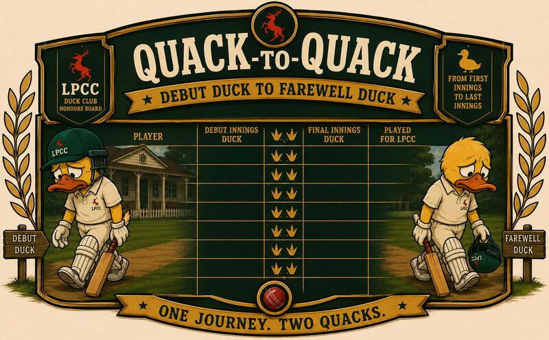
The Quack-to-Quack honours board celebrates that rare few whose Linton journey both begins and ends with a goose egg. Whenever a player records a duck on debut and then, in their final innings, is dismissed for zero once more, their name takes pride of place here—a playful tribute to careers bookended by the infamous quack. It’s a reminder that sometimes cricketing stories come full circle, from first bite to last bow, all marked by the same memorable zero. Entries are drawn from 1950 onwards, when the scorecard archive becomes complete season by season — before then the records, like the batting, have gaps.
| Player | Debut Innings | Sunset Innings | Debut | Sunset |
|---|---|---|---|---|
| Brian Relf | 1950 | 1971 | Scorecard | Scorecard |
| Frank Wright | 1953 | 1962 | Scorecard | Scorecard |
| Monty Deakes | 1954 | 1956 | Scorecard | Scorecard |
| Dave Hales | 1969 | 1993 | Scorecard | Scorecard |
| Andrew Kember | 1985 | 1985 | Scorecard | Scorecard |
| Adrian Simmonds | 1985 | 1990 | Scorecard | Scorecard |
| Nick Stephens | 1987 | 1991 | Scorecard | Scorecard |
| Richard Ellis | 1994 | 2001 | Scorecard | Scorecard |
| Harry Bee | 2008 | 2012 | Scorecard | Scorecard |
| Nat Presneill | 2010 | 2018 | Scorecard | Scorecard |
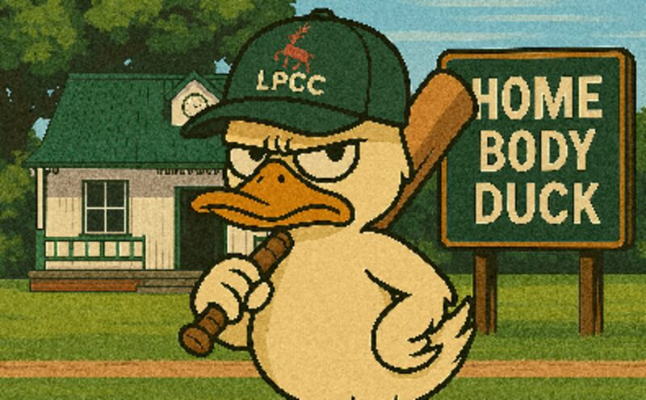
The Homebody Duck honours board celebrates those batsmen whose goose eggs find them right on familiar turf. Whenever a player is dismissed for a duck at our home ground, their name is etched here—a playful reminder that even the comfort of home advantage can’t always stave off the dreaded zero. It’s a tribute to hometown woes, proving that sometimes the hardest place to score is the one you know best.
| Player | No of Ducks |
|---|---|
| Tim Thirkell | 62 |
| Jon Harris | 58 |
| John Thirkell | 51 |
| Jim Hall | 50 |
| Trevor Back | 47 |
| Richard Piper | 45 |
| John Ames | 36 |
| Nigel Thirkell | 35 |
| Matt Large | 34 |
| Jordan Austin | 31 |
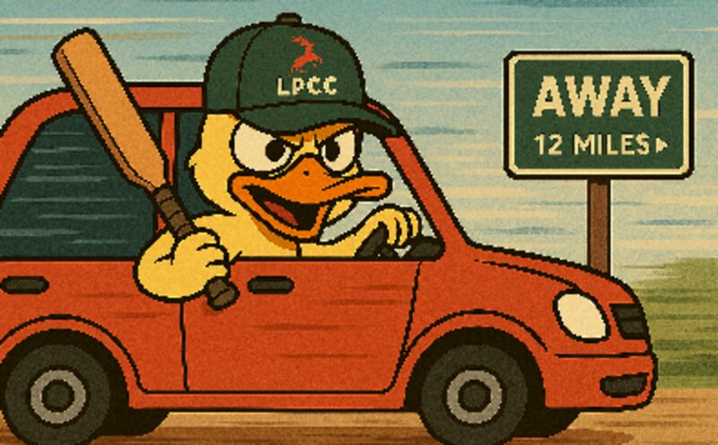
The Ducks on the Road honours board pays tribute to those hardy batsmen whose goose eggs follow them into enemy territory. Whenever a player is dismissed for a duck in an away fixture—be it at a rival ground, over county lines, or on distant tours—their name joins this rolling roll of (mis)honor. It’s a playful salute to the added pressures of unfamiliar pitches, hostile crowds, and long travel—and a reminder that no matter how far you roam, the dreaded duck feels right at home.
| Player | No of Ducks |
|---|---|
| Richard Piper | 51 |
| Trevor Back | 47 |
| Tim Thirkell | 42 |
| John Thirkell | 39 |
| Jon Harris | 37 |
| Simon Thirkell | 34 |
| Jim Hall | 29 |
| Matt Large | 29 |
| Paul Bowles | 29 |
| David Castle | 27 |
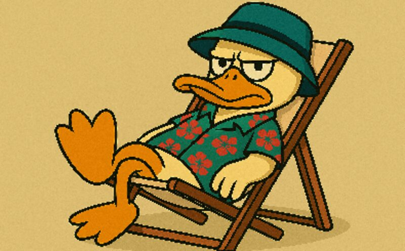
The Tourist Duck honours board is reserved exclusively for those who register a goose egg during official tour matches. Whenever a player is dismissed for a duck while representing Linton on tour—whether it be nationally or internationally —their name takes its place here. It’s a tongue-in-cheek salute to the extra challenges of foreign fields, long travel and different playing conditions, proving that even the most intrepid tourer can’t always escape the dreaded zero.
| Player | No of Ducks |
|---|---|
| Simon Thirkell | 8 |
| David Castle | 6 |
| Mike Elworthy | 6 |
| Daniel Thirkell | 4 |
| Fred Cheesman | 4 |
| Jim Hall | 4 |
| Jon Harris | 4 |
| Nigel Thirkell | 4 |
| Piers McDonald | 4 |
| Richard Ashby | 4 |
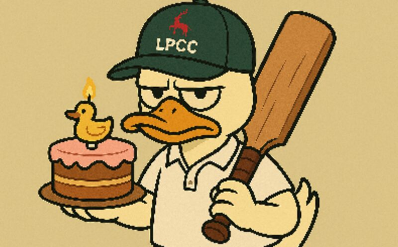
The Birthday Duck honours board celebrates those players brave enough to don the whites on their special day—and then walk back to the pavilion scoreless. Whenever a batsman takes the crease on their birthday and registers a duck, their name is etched here. It’s a lighthearted nod to the way cricket and cake can sometimes clash, reminding us that even on your own celebration, the dreaded zero can crash the party.
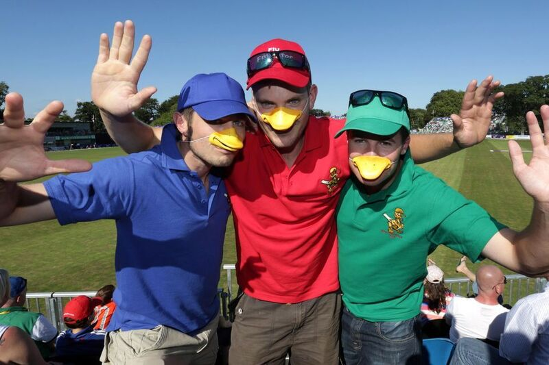